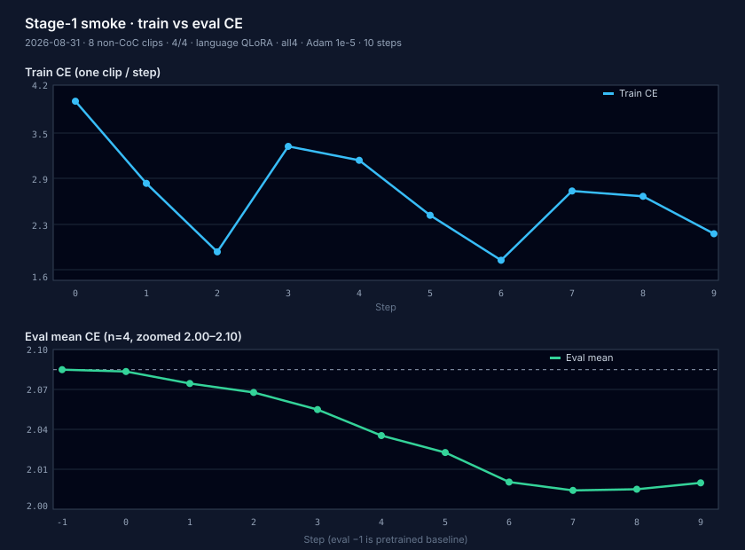
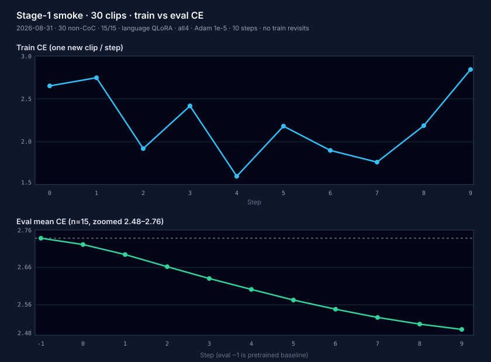

User closed G3. The original 0.2 m ADE band on a frozen 50-clip slice is not required. Quality is confirmed by human inspection of the P2f 5-clip plots (XY, CoC, speed) at mlx_port/reports/traj_sample_5_t06/ — reviewed 2026-08-29. Heading and scene language hold (clip 0 left turn, clip 4 lateral miss gone). Yield/stop overshoot is leftover, not a P2f regression. Recorded minADE numbers stay in the tables; they are not a pass/fail.
This is a quality close. It does not claim T3.1 / all4 beat P2f prefill. Default load stays dense bf16. T3.1 and all4 stay opt-in memory. Decode W4 (−160 ms) remains the only quant speed signal. T3.3 50-clip ADE is optional logging.
User closed G4 on the 8-clip 2-epoch Stage 1→2 smoke. Stage 1 language QLoRA (all4, vision frozen): eval 1.853→1.827, all four train clips down on revisit, Metal 78.68 GB. Stage 2 expert QLoRA + dense action I/O on those adapters: eval 0.260→0.180, Metal 11.66 GB. Clip 7744 Stage-2 train 0.323→1.989 is finite (the pre-kappa ~11k CFM bug stays closed). Train Adam is 13.7 s (Stage 1) / 4.2 s (Stage 2) — a different regime from 110 s infer. Serve as packed base + adapters; fuse is still optional. Curves: sft_8clip_2ep_curves.html.
This is an SFT-smoke close, not a claim that 8 clips are a full finetune. Default load stays dense bf16. Do not call the infer rollout inside an optimizer step.
Same G4 clip 77447940…, t0=5.1 s, seq=3124, 16×[1,20,36], all4.
Infer P2f is the signed greedy window. Train is language-only Stage 1
then expert QLoRA + action I/O Stage 2. Vision is encoded once
(freeze_vision_features) and stop-grad’d — encode is not on
the Adam tape.
| Stage | Infer P2f | Train S1 fwd / Adam | Train S2 fwd / Adam |
|---|---|---|---|
| tokenize | — | 15.2 s (once / clip) | 12.8 s (once / clip) |
| encode | 1044 ms | 1111 ms cache, then 0 | 1113 ms cache, then 0 |
| prefill / backbone | 3645 ms (compiled) | 4279 ms (eager) | 3984 ms (compiled, frozen) |
| decode | 856 ms / 13 tok | 0 (teacher-force) | 0 |
| FM / expert | 630 ms / 10 Euler | 0 (CE only) | 73 ms / 1 CFM |
| fwd+bwd | — | 13592 ms | 4085 ms (≈ fwd; VLM stop-grad) |
| Adam | — | 63 ms | 70 ms |
| dominant | prefill | fwd_bwd | fwd_bwd ≈ backbone |
Stage 1 Adam is ~3× the materialized forward: backward through
language LoRA at seq=3124. Stage 2 Adam matches the forward
(4.08 vs 4.18 s) because KV is stop_gradient — the
VLM still runs for cache, the expert backward is cheap.
The 8-clip 2-epoch script wall is dominated by eval
(4 clips × backbone after every Adam step): Stage 1
prep 133 s + loop 241 s (8×12.5 train + 8×17.5 eval);
Stage 2 prep 138 s + loop 172 s (8×4.4 train + 8×17.1 eval).
User confirmed all G1 success criteria are met. Canonical
baseline is P2f greedy e2e: encode 1044 · prefill 3645 ·
decode 856 / 13 tok · FM 630 / 10 · dominant
prefill. Dtype bf16
(action_in_proj Fourier still fp32). Compiled: prefill yes;
encode / decode / FM no. num_traj_samples=1,
max_generation_length=256.
One documented cold trial; user accepted. Phase 3 T3.1
(4-bit language tower only) is unblocked. Do not 4-bit the
expert or vision first. PR
#7
still merged before a .venv table — do not repeat
that process error.
Same greedy clip, T=0, seq=3006, 16×[1,20,36]. Prefill GEMM at
3006 tokens is compute-bound on M4 Max (~60× above the
~51 FLOP/byte ridge). Metal has no int4 / nvfp4 MMA.
QuantizedLinear dequants a tile in registers then
runs the same FP16/BF16 BlockMMA. Extra recipes
added unpack work; none beat P2f prefill 3645 ms.
Decode W4 (−160 ms) is the only real speed signal.
Metal peak drops ~10 GB once the decoder is 4-bit;
packing vision / head / expert does not move that peak
(sampled during first vlm()). RSS high-water stayed ~63 GB.
minADE on these shots is unseeded FM — ignore. CoC pin held on 12–13 tokens.
Code now: three kept
paths. Default is dense bf16
(quantize_lm=False / unset /
ALPAMAYO_QUANT=none) — the signed P2f path.
T3.1 is opt-in
(quantize_lm=True or
ALPAMAYO_QUANT=lm4).
all4 is opt-in
(quantize_all=True or
ALPAMAYO_QUANT=all4): full VLM + expert, packed at
pre-trained/Alpamayo-R1-10B/mlx_all4/
(4.79 + 1.19 GiB). Exclusive with T3.1.
Leftover
ALPAMAYO_QUANT=vlm8|vlm4|nvfp4 raises.
None of these beat P2f prefill. G3 signed 2026-08-31 on qualitative inspection (ADE band waived).
main (not optimize-inference-time; that landed in #5).ALPAMAYO_STAGE_TIMERS=1) so the default e2e path stays unchanged.vision_tower only.language_model(...) on the prompt (seq_len > 1) plus mx.eval(logits) inside AlpamayoModel.__call__. After token 1, one-token LM calls are decode (warm KV).ALPAMAYO_STAGE_TIMERS=1.mx.eval after the Euler loop. Mid-loop clear_cache removed so it cannot sync every 3 steps.mx.compile each decoder layer for seq_len > 1. Cache is captured in the closure (it cannot be a compile argument). Decode stays eager.__call__ — a no-op for layer(...). 14:40 e2e was eager. Fix: replace each decoder with CompiledPrefillLayer so the class __call__ is what Qwen3VLModel invokes.bind_image_pixel_budget after processor load. Qwen3-VL JSON size.longest_edge=16777216 left 1080p at grid 68×120. NVIDIA budget is 163840–196608 (~320×576, grid 20×36).coc_sample_5_t06). Native-32k snapshot kept at results_pre_p2f.json.vlm.language_model only. Packed tower lives at {alpamayo}/mlx_lm4/language_model.safetensors (6.02 GiB). First T3.1 load live-packs and saves; later loads install empty QuantizedLinear and load_weights (skip Alpamayo language / lm_head keys). Incomplete pair raises. KEEP_DENSE stays bf16: vision / expert / lm_head / embeddings. ALPAMAYO_QUANT=none|lm4 overrides the kwarg; any other value raises.stage1c-p3-all4-disk): affine-4 gs64 on the full VLM (vision + language + lm_head + embeddings) and the diffusion expert. Walks are vlm and expert only — never AlpamayoR1MLX. Action-in/out stay bf16 (siblings, not in the walker). Vision linear_fc2 (in=4304 ≉ 64) stays dense and is listed — raise if any other packable Linear is left dense. Conv3D and all RMS/LayerNorms stay bf16 (no to_quantized). Packed trio: {alpamayo}/mlx_all4/{vlm,expert}.safetensors + config.json. Incomplete trio raises. Exclusive with T3.1. ALPAMAYO_QUANT=all4 / quantize_all=True. Leaf table is in Quantization recipes.stage1c-t43-train-step): SFT train graph is not the infer rollout. sft_train_step teacher-forces one VLM forward (shifted CE) and/or one CFM draw + one expert forward. FlowMatching.construct_training_data / compute_loss_from_pred match NVIDIA (noisy_x = t*x + (1-t)*noise, target x-noise). Raises if the step decoded tokens or ran Euler. Stages: stage1 (CE only), stage2 (CFM only), joint (CE+CFM). Infer sample_trajectories_from_data_with_vlm_rollout is unchanged. Paper 5.2 CoC teacher string is opt-in (--teacher-cot). Forward-only: packed ints are not updated.sft_stage1 then sft_stage2. Stage 1 CE is discrete traj-future + assistant <|im_end|> — not CoC. create_message(sft_stage="stage1") matches vla_processor.yaml (components_order=[image, traj_history, prompt, traj_future], user “output the future trajectory.”, 128 <|traj_future|> pads). fuse_traj_tokens replaces those pads via DiscreteTrajectoryTokenizerMLX (64×2 action bins, num_bins=3000, dims=[-10,10]). labels_mask is the traj span plus assistant im_end (131 tokens). Loss is NVIDIA’s two means (future-traj + others). Stage 2 freezes the VLM (stop_gradient on KV), one CFM draw, one expert forward. --expert-update Adam-steps the expert; packed QuantizedLinear.weight raises. Infer history fusion is unchanged (hist still at <i0>; NVIDIA SFT would offset hist by 3000 — we keep the signed infer rows so Stage-2 KV matches infer). --from-clip default is this recipe. --teacher-cot keeps paper 5.2 CoC CE.finetune/sft + src/alpamayo_r1. Stage-1 user content is now NVIDIA’s three parts (images, hist text, prompt text). Qwen’s chat template concatenates the two text items with no separator — same tokens as the old joined string. Stage 2 train now passes a zeros additive mask (B, 1, T, prefix+T) when expert_non_causal_attention (config default true). mlx_vlm builds a causal mask when mask is None; NVIDIA Stage 2 train is is_causal=False, attention_mask=None. Hist offset stays at <i0>. Optimizer stays QLoRA (not dense VLM + 0.1× vision LR). Suite: test_sft_nvidia_parity.py.stop_gradient, all4, lr 1e-5, 10 Adam steps. t0 is NVIDIA default keyframe 5.1 s — not a CoC event. CoC IDs (1740, including the greedy eval clip) are excluded and the split is asserted disjoint. Script: mlx_port/scripts/sft_stage1_small.py.--n-clips 30 → 15/15. Same seed 0, all4, language QLoRA, vision frozen, 10 steps, lr 1e-5, t0=5.1 s. Report: mlx_port/reports/sft_stage1_small_30clip.json (does not overwrite the 8-clip JSON). Ten steps see 10 of 15 train clips (no revisit). Eval mean is over 15 held-out clips every step. That run did not write LoRA weights (they were discarded on exit).save_lora_adapters overwrites one file, adapters.safetensors, plus adapter_config.json (step field updates). No per-step filenames. Packed ints are not written. Default --lora-save-every 10; the last step is always written to that same file. --no-lora-save disables. Default dir: mlx_port/reports/qlora/sft_stage1_small. Load is load_lora_adapters after inject; key-set mismatch raises. Trained A/B stay local: mlx_port/reports/qlora/ is gitignored and is not in PR #15.macos-26 (no weights) failed at collection. test_sft_stage1_small.py and test_train_step.py imported time_train_step, which imported load_physical_aiavdataset and run_local_coc_sample at module load. CI does not install physical_ai_av. Fix: lazy-import the NVIDIA PAI loader inside build_pai_train_batch; default --local-dir is now gt_eval.LOCAL_PAI_COC.macos-26 fail was test_config_json_and_sft_yamls reading pre-trained/Alpamayo-R1-10B/config.json (not on CI). Skip that file when ALPAMAYO_CI_NO_WEIGHTS or missing. Repo SFT yamls still run as test_sft_yamls.mlx_port/reports/qlora/sft_stage1_small, then vlm.freeze() including A/B). Train the 2.3B diffusion expert + action in/out with one CFM draw (NVIDIA sft_stage2, lr 1e-4). Same 8 non-CoC clips / seed 0 / t0=5.1 s as Stage 1. all4 VLM stays packed; expert is dense bf16 (quantize_expert=False). Packed expert cannot Adam-step. No Euler, no CoC decode. Script: mlx_port/scripts/sft_stage2_small.py.77447940… every revisit. Cause: MLX traj_to_action used kappa = dtheta / (s + 1e-8), which explodes at near-zero speed. NVIDIA uses regularized solve_xs_eq_y (_theta_v_a_to_kappa). After the match, that clip’s action is in [−1.31, 4.04] and train CFM is 0.35. First-run JSON kept as mlx_port/reports/sft_stage2_small_8clip_pre_kappa.json.--dense-expert (load expert as bf16) and --expert-dense (Adam leftover action I/O) were anagrams. Replaced by --expert-bf16 and --train-action-proj. Old names are hidden and error with the new name. Python kwarg is train_action_proj.reports/ moved to mlx_port/reports/. The training-options how-to left the progress-report tree and now lives at mlx_port/doc/train_lora_vs_dense.html. Script defaults resolve those dirs from mlx_port/paths.py. reports/qlora/ gitignore is now mlx_port/reports/qlora/.--epochs 2 → 8 Adam steps (each train clip twice). Stage 1: all4 VLM, language-decoder QLoRA only (vision frozen). Stage 2: load those adapters, freeze the VLM, --expert-lora --train-action-proj (packed expert decoder QLoRA + dense action I/O). Writes to mlx_port/reports/qlora/sft_stage1_small_8clip_2ep/ and …/sft_stage2_small_8clip_2ep/ so the 10-step smokes stay untouched.fwd_bwd → Adam. No decode, no Euler. sft_lora_update / sft_expert_update mx.eval(loss, grads) before opt.update so backward is not lazy-attributed to Adam. Materialized sft_train_step still binds StageClock for encode / backbone. Prints a [TRAIN] line (same shape as [STAGE]). JSON: mlx_port/reports/train_stage_times.json.PORT.md, alpamayo1-mlx-speedup-plan.html.--expert-lora wraps the diffusion transformer’s 36×7 q/k/v/o/gate/up/down leaves (252) with mlx_lm LoRALinear rank 8 / scale 20. Default Stage-2 path stays dense full FT. With --expert-lora, the all4 expert stays packed; only expert A/B train. action_in_proj / action_out_proj stay dense and frozen unless --expert-dense also Adam-steps them (packed decoder ints stay frozen). VLM + Stage-1 LoRA stay frozen. Packed expert ints are hashed with the VLM fingerprint. Exclusive with --expert-update. Expert adapters write to mlx_port/reports/qlora/sft_stage2_small/ (gitignored); --expert-dense also writes dense.safetensors. 8-clip LoRA-only smoke (same seed-0 4/4): eval 0.198→0.185, Metal 11.72 GB, packed 1097:9b90d23a… unchanged. 8-clip --expert-dense (same split): eval 0.188→0.219 (spike 0.494), Metal 11.74 GB, dense.safetensors 2.6 MB / 15 arrays.stage1c-t41-qlora): QLoRA on the language decoder and the vision tower. inject_backbone_lora wraps the 36×7 decoder q/k/v/o/gate/up/down leaves (252). Vision scope is --lora-vision full|merger|none (default full): full wraps 27 blocks qkv/proj/fc1/fc2 + merger + 3 deepstack (116); merger wraps merger + 3 deepstack only (8); none is language-only. mlx_lm LoRALinear rank 8, scale 20. Conv3D patch_embed, LayerNorms, pos_embed, expert, lm_head, embeddings stay frozen. After model.freeze(), only lora_a/lora_b train (full 736 / 26.2 M; merger 520 / 22.4 M). Packed QuantizedLinear.weight is hashed before/after the step. Vision LoRA keeps encode on the tape; freeze_vision_features raises if vision adapters are present. --lora requires --stage stage1. --lora-vision requires --lora.mlp.linear_fc2 (4304 ≉ 64); nvfp4 gs16 can. Conv3D patch embed never has to_quantized. Expert last dims 2048/8256 are ÷64. Action-in/out stayed dense. Metal nvfp4 is E2M1 + per-group FP8 scales, not Blackwell tensor cores.G1 exists so the first cut is named. It was prefill at 32k tokens; P2f cut that work. Phase 3 is now allowed on the language tower only.
Why G3 dropped the ADE band. User confirmed the 5-clip plots by eye. Unseeded one-clip minADE and a 50-clip 0.2 m band are not the quality gate. T=0.6 ADE tables stay as records, not rankings.
Why train timers are not the infer clock.
Infer StageClock evals logits at encode / prefill / decode
boundaries. Binding that clock inside nn.value_and_grad
would mx.eval on the tape (forbidden). Adam therefore
evals loss, grads then parameters, opt.state
— two host barriers, same numerics. Encode vs backbone still
comes from a materialized forward (eval / time_train_step
[TRAIN-FWD]). Decode and 10-step FM are not train
stages. The 8-clip script wall is mostly eval (4 clips after
every step), not the Adam step itself.
Why P2e compile did not cut prefill (−48 ms on 58.1 s).
mx.compile fuses small elementwise chains and amortizes graph capture across many same-shape calls.
It does not rewrite matmul or attention. Eager MLX is already lazy: the 36-layer stack is one graph until
mx.eval(logits). The 32k-token pass was native 1080p, not a kernel problem.
Why P2f cut prefill 16×.
Qwen3-VL JSON size.longest_edge=16777216 left 1080×1920 at grid
68×120. NVIDIA helper/SFT already declare 163840–196608.
Binding that after load yields 20×36 (~180 tokens/frame, seq 3006).
The greedy CoC pin moved from stop-sign to yield-to-pedestrian (closer to GT).
Why VLM affine-8 did not cut the window. Same first-shot compile tax as T3.1 W4. Encode got slower (8-bit vision Linears, encode is not compiled). Prefill 4.13 s vs P2f 3.64 s. Decode matched bf16, not the W4 decode win. CoC pin held.
Why VLM affine-4 is the slowest prefill.
Same 342 packed leaves as W8, but 4-bit dequant on the compiled 3006-token
first capture costs more (6.54 s vs 3.64 s bf16). Decode is the
one stage that improved (664 ms). CoC pin still held with 4-bit
lm_head + embeds.
Why all4 did not cut FM. The 10 Euler steps still dequant 252 expert Linears on a first-shot graph. FM 1131 ms vs P2f 630 ms. Action-in/out stayed bf16. Prefill is the same VLM-W4 recipe as 21:25; 4.47 s vs 6.54 s is first-capture noise, not an all4 win.
Why VLM nvfp4 did not cut the window. Apple Silicon is not NVIDIA nvfp4: Metal dequant shaders, not FP4 tensor cores. Group size 16 has more scale traffic than affine gs64. Prefill 5.90 s vs P2f 3.64 s and T3.1 W4 4.43 s. Faster than affine VLM-W4 6.54 s (fc2 now packed, different kernel). Encode 1.27 s is the slowest of the set (quantized vision). Expert stayed bf16; FM 1.38 s is first-shot noise, not an nvfp4 claim. CoC pin held (12 decode tokens vs 13 on the other probes).
Why the 10-step train curve is clip-wise, not a smooth 3.99→2.22 line. Each step is a different clip (cycle of 4). First-step CE 3.99 is the hard train clip; eval mean starts at 2.09 because the held-out four are easier discrete-traj sequences. On revisit, every train clip drops (3.99→3.20→2.72, 2.89→2.47→2.22, 1.98→1.87, 3.38→2.79). Eval mean 2.087→2.012 then flat 2.016. No NaN, no packed-weight drift. That is a healthy 10-step QLoRA smoke, not G4.
30-clip follow-up (15/15, same recipe). Eval mean over 15 held-out clips falls every step: 2.738→2.495 (−0.243). Train CE 2.65→2.84 is ten different clips (15-train pool, 10 steps, no revisit); step 9 is a harder unseen clip, not a rise on the same example. Metal 82.31 GB / RSS 28.11 GB vs 8-clip 78.55 / 26.15. Packed fingerprint unchanged.
Why adapters are now written to disk.
The 8- and 30-clip smokes discarded LoRA A/B on exit.
Saves are A/B only, every 10 completed steps plus the
last step, always to the same
adapters.safetensors under
mlx_port/reports/qlora/. Packed all4 weights stay
in pre-trained/…/mlx_all4/.
Why expert QLoRA is opt-in, not the default.
Default all4 load packs the expert. Packed
QuantizedLinear.weight cannot Adam-step, so
the smoked Stage-2 path loads a dense bf16 expert and
full-FT it. --expert-lora is the way to
train a packed expert: same 36×7 recipe as
language QLoRA. Action in/out are ~1.35 M and sit
outside the decoder; they stay dense + frozen so the
trainable set is A/B only and
save_lora_adapters stays clean. This is
not a full 10B finetune and not G4. 8-clip
--expert-lora sanity (2026-08-31): same
4/4 / seed 0 / t0=5.1 s / lr 1e-4. First-step
train CFM 1.45 (packed expert ≠ dense 0.35). Eval
0.198→0.185 with a mid-run spike to 0.340. Clip 7744
stays hard (1.45 / 2.31 / 1.53) but finite — kappa is
fine. Metal 11.72 GB vs dense FT 32.26. Packed
fingerprint held. Adapters 50 MB / 504 arrays.
Why --train-action-proj is a separate flag.
QLoRA of the packed decoder cannot Adam-step
QuantizedLinear.weight. Action in/out never
packed (~1.35 M) and are the CFM I/O. Default
--expert-lora keeps them frozen so the
trainable set is A/B only. --train-action-proj
(was --expert-dense) is the regular update of
those leftover dense modules, same Adam LR. Decoder packed
ints stay frozen. Save writes A/B to
adapters.safetensors and action weights to
dense.safetensors. Not a full 2.3B FT and
not G4. 8-clip sanity (2026-08-31): eval 0.188→0.219
with a spike to 0.494. Train clip-wise 1.75→0.29.
Clip 7744 is 1.75 / 0.45 / 2.53 — not monotonic.
Packed 1097:9b90d23a… matches the
LoRA-only run. Metal 11.74 GB (same class as
LoRA-only 11.72). Adapters 50 MB + dense 2.6 MB
under mlx_port/reports/qlora/sft_stage2_small_dense/.
Why Stage 2 trains a dense expert.
sft_expert_update raises on packed
QuantizedLinear.weight. The Stage-1
adapters wrap an all4 language tower, so the VLM stays
all4 + frozen LoRA. The 2.3B expert loads from the
dense Alpamayo safetensors (bf16). NVIDIA Stage-2 LR
is sft_base 1e-4. Eval CFM uses a fixed
RNG seed so the held-out mean is comparable across
steps (same noise / t draws).
Why clip 7744 CFM was ~11k.
Stage-1 discrete bins clamp to [−10, 10]. Stage-2 CFM
uses continuous normalized accel/curvature. Dividing
heading change by near-zero arc length is not NVIDIA’s
solver. After solve_xs_eq_y, all eight
clips sit in about [−4.5, 4.6]. 10 Adam steps at 1e-4
did not lower held-out CFM (0.202→0.310).
That is a short smoke, not G4.
Why the first Stage-2 run hit CFM ~11k on clip 7744.
MLX traj_to_action recovered curvature as
dtheta / (s + 1e-8). Near-zero speed
explodes kappa. NVIDIA uses
_theta_v_a_to_kappa:
solve_xs_eq_y(s=dt·v+½dt²a, y=dtheta, w_smooth2=1).
After that match, clip 7744 action is
[-1.31, 4.04] and train CFM is 0.35 (not 11424).
The first JSON is kept as
mlx_port/reports/sft_stage2_small_8clip_pre_kappa.json.
Why Stage 2 train must pass an explicit zeros mask.
NVIDIA TrainableAlpamayoR1 sets is_causal=False and
attention_mask=None so the 64 action tokens attend to the full
cropped KV and to each other. mlx_vlm Qwen3VLModel calls
create_attention_mask whenever mask is None — that
is causal. Infer already built expert_attention_mask
(zeros + pad hide). Train now passes
expert_non_causal_train_mask: same shape, all zeros, no pad
hide (SFT has no generation padding).
NVIDIA SFT recipe is now the default train graph.
Official sft_stage1 trains TrainableReasoningVLA
to emit discrete future-traj tokens
(vla_processor.yaml:
label_components=[traj_future] plus assistant
im_end). Then sft_stage2 freezes the VLM
and trains the expert. MLX --from-clip --stage stage1
is that Stage-1 recipe (128 fused action bins + start/end +
im_end, two-mean CE).
--stage stage2 freezes the VLM and runs one CFM
draw. Still not a full NVIDIA Stage-1 optimizer
(they update the dense VLM + vision at 0.1× LR on 8×H100;
we QLoRA the decoder plus vision
--lora-vision full|merger). Hist embedding offset stays at
<i0> (signed infer), not NVIDIA’s
hist_start += 3000.
Why T4.3 is a different regime from infer. NVIDIA Stage 1/2 never generate. The 110 s / 28 s infer window is encode + prefill + AR CoC + 10 Euler steps. A train step is one teacher-forced VLM forward plus one CFM draw. Dummy seq=64 joint on the real 10B: bf16 backbone 3.67 s + expert 1.05 s; all4 disk backbone 0.72 s + expert 0.28 s (first compile seq=64, not a speed ranking). PAI all4 joint on the greedy e2e clip: first smoke seq=3007 (infer prompt + marker) CE 14.57 on the whole prefix. Teacher-CoC smoke: seq=3024 · n_ce=16 · encode 1.10 s · backbone 3.89 s · expert 0.10 s · total 5.15 s · CE 2.60 (CoC span only) + CFM 1.08 · 0 decode / 0 Euler · Metal 10.30 GB / RSS 24.92 GB. GT label: “Strong deceleration to yield to the pedestrian crossing the crosswalk.” Packed all4 weights are not updated (T4.1 freezes them and trains LoRA).
Why compiled prefill + QLoRA OOM’d (~200 GB Metal).
Infer compile at seq=3024 is cheap (T4.3 PAI joint Metal 10.3 GB).
Each of the 36 layers has its own mx.compile graph
(cache is a closure; key is (id(cache), seq)).
Eager backward reuses attention scratch layer-to-layer and
peaked at 66 GB. Autodiff through a compiled layer
treats the fused region as one node, so seq² attention
temps stay pinned on the tape for every layer at once
(and MLX also builds a VJP graph). Metal climbed almost
linearly (~3 GB/layer) from 4 → 76 → 200 GB,
then exit 137. Dummy seq=64 compile+grad fit because
attention is (3024/64)² ≈ 2200× smaller.
Train unwraps compile; infer keeps it.
Why T4.1 is QLoRA, not a full 10B finetune.
Metal dequants packed ints into FP16/BF16 MMA. There is no
gradient through QuantizedLinear.weight. LoRA is
y + scale * (x @ A @ B) on the 252 decoder GEMMs.
Dummy all4 Stage-1 (seq=64, language-only, lr=1e-5, 50 steps):
loss 19.12 → 0.89 · ~250 ms/step after first capture ·
wall 12.8 s · Metal 10.66 GB / RSS 23.80 GB.
lr=1e-4 overshoots dummy CE (19→11 then 23). PAI language-only
(eager, vision stop-grad, CoC-span CE): loss 2.59
(matches T4.3 CE 2.60; LoRA B starts at 0) · 11.6 s ·
Metal 66.48 GB / RSS 24.99 GB.
PAI Stage-1 + vision full (2026-08-31, seq=3124, n_ce=131,
encode on tape): loss 3.7714 · 24.8 s · Metal 107.47 GB /
RSS 23.27 GB · 736 arrays / 26.2 M.
PAI Stage-1 + vision merger: same CE 3.7714 · 12.5 s ·
Metal 76.79 GB / RSS 25.01 GB · 520 arrays / 22.4 M.
First-step CE matches Stage-1 forward 3.7684 (LoRA B is zeros).
Packed fingerprints unchanged
(full 682:0b69306e…;
merger 601:1c370532…).
Activity Monitor ~118 GiB during the 10-step smoke is expected.
The script’s meters are two different APIs: MLX
get_active_memory() peaked at
78.55 GB Metal; Mach
resident_size peaked at
26.15 GB. That RSS
excludes most GPU/Metal mappings.
Activity Monitor process Memory is
phys_footprint (includes IOKit/Metal).
The Memory Used number at the top of the monitor is
the machine: Metal 78.5 + CPU RSS ~26 +
Cursor / macOS / other apps ≈ 118 on this 128 GiB
Mac (~10 GiB headroom). Do not treat 118 as a
leak. Infer all4 is ~10 GB Metal; the jump is the
eager value_and_grad tape at seq=3124
(one-clip language QLoRA already 66.48 GB) plus
eight live cached_image_features tensors
(~+12 GB vs that one-clip). Compiled prefill +
grad was the ~200 GB kill; this run did not
compile the tape.
Memory meter API.
MLX deprecated mx.metal.get_active_memory.
mlx_port/profiling.py now calls
mx.get_active_memory() (same live-buffer
count). Mach RSS is unchanged.
.venv table — already happened; do not repeat.mode=nvfp4 as Blackwell tensor cores, or pad/split vision fc2 so affine can pack it.sample_trajectories_from_data_with_vlm_rollout inside an optimizer step. That is the infer graph.labels_mask replaced it.(1, 1, T, …) ego tensors into traj_to_action without dropping n_traj — mx.diag raises on 3-D.CompiledPrefillLayer on the QLoRA tape. compile+value_and_grad at the PAI window (seq=3024) ballooned Metal to ~200 GB and the process was killed (exit 137). Infer compile stays.freeze_vision_features / cache stop-grad image features when vision LoRA is injected — adapters would get zero grad. Language-only (vision=False) still detaches encode.
Both T3.1 and all4 are weight-only
MLX affine PTQ: bits=4, group_size=64,
mode="affine". Activations stay bf16.
Pack axis is the Linear / Embedding last dim
(in-features). Each group of 64 inputs stores a bf16 scale
and a bf16 zero-point (.biases). Packed weights
are uint32 (eight 4-bit values per word).
Example: language q_proj bf16
(4096, 4096) → packed (4096, 512)
uint32 + scales/biases (4096, 64) bf16.
At runtime Metal dequants a tile and runs the same
FP16/BF16 BlockMMA — no native 4-bit compute.
Default load remains signed P2f dense bf16.
Predicate: has to_quantized, last dim ÷64, path
is not an action projection. Any other packable Linear left
dense raises. T3.1 walks
vlm.language_model only. all4 walks
vlm then expert — never the full
AlpamayoR1MLX.
lm4 — language decoder only
252 QuantizedLinear. Packed at
{alpamayo}/mlx_lm4/language_model.safetensors
(6.02 GiB). KEEP_DENSE stays bf16:
vision, expert, lm_head, embeddings.
| Leaf | Count | Recipe |
|---|---|---|
| q/k/v/o + gate/up/down | 36 × 7 = 252 | affine-4 |
| lm_head, embed_tokens | 1 + 1 | bf16 |
| vision, expert, action-in/out, norms, Conv3D | all | bf16 |
Language: 36 layers, hidden 4096, MLP 12288, GQA 32/8, head 128.
Vision: 27 blocks, hidden 1152, MLP 4304, merge 2×2 → 4608.
Packed mlx_all4/vlm.safetensors 4.79 GiB.
| Language leaf | Count | Recipe |
|---|---|---|
| q_proj k_proj v_proj o_proj | 36 each | affine-4 |
| gate_proj up_proj down_proj | 36 each | affine-4 |
| lm_head | 1 · vocab 155697 | affine-4 (T3.1 keeps bf16) |
| embed_tokens | 1 · vocab 155697 | QuantizedEmbedding (T3.1 keeps bf16) |
| Vision leaf | Count | Recipe |
|---|---|---|
| attn.qkv, attn.proj | 27 each | affine-4 |
| mlp.linear_fc1 | 27 · in=1152 | affine-4 |
| mlp.linear_fc2 | 27 · in=4304 | bf16 · 4304 % 64 = 16 · listed in config |
| merger + 3 deepstack fc1/fc2 | 8 · in=4608 | affine-4 |
| pos_embed | 1 · (2304, 1152) | QuantizedEmbedding |
| patch_embed.proj Conv3D | 1 · (1152, 3, 2, 16, 16) | bf16 · no to_quantized |
Same Qwen3 decoder, smaller: 36 layers, hidden 2048, MLP 8256,
16 heads, head 128. Every decoder last dim is 2048 or 8256
(both ÷64), so all 252 pack. No lm_head.
Dummy embed_tokens vocab=1 is packed and unused
(expert is fed inputs_embeds from action-in).
Packed mlx_all4/expert.safetensors 1.19 GiB.
| Leaf | Count | Recipe |
|---|---|---|
| q/k/v/o + gate/up/down | 36 × 7 = 252 | affine-4 |
| input / post / q / k / final RMSNorm | 36×4 + 1 | bf16 |
mlp.linear_fc2 (1152, 4304) + bias — only listed last-dim skip.patch_embed.proj + bias..biases.action_in_proj (never walked): Fourier freqs fp32; MLP 60→512, 512→512, 512→2048 bf16; LayerNorm dense; forward still casts the window to fp32.action_out_proj Linear(2048, 2) bf16.FlowMatching and the history tokenizer — no GEMM weights.| Piece | T3.1 lm4 |
all4 |
|---|---|---|
| Language decoder Linears | 4-bit | 4-bit |
| lm_head + embed_tokens | bf16 | 4-bit |
Vision Linears / pos_embed | bf16 | 4-bit except 27× fc2 |
| Expert decoder | bf16 | 4-bit |
| Action-in/out, Conv3D, norms | bf16 / fp32 | same |
vlm_step_stage: seq>1 prefill, seq=1 decodelanguage_model + eval logits per stepmlx_port/reports/traj_sample_5_t06* (keep HTML/JSON)# 2026-08-31 small-scale Stage-1 language QLoRA (no CoC clips)
PYTHONPATH=src:. /Users/michaellee/Projects/alpamayo/.venv/bin/python \
-m mlx_port.scripts.sft_stage1_small --n-clips 8 --steps 10 --seed 0 --quantize-all
# 4/4 split · t0=5.1s · 252 decoder LoRA · vision stop-grad · all4
# eval-1 2.0874 · train 3.9860→2.2214 · eval 2.0874→2.0165
# prep 152.8 s · wall 282.6 s · Metal 78.55 GB / RSS 26.15 GB
# packed fp 593:e56ee262… unchanged
# 2026-08-31 G4 · 8-clip 2-epoch (signed 2026-08-31)
PYTHONPATH=src:. /Users/michaellee/Projects/alpamayo/.venv/bin/python \
-m mlx_port.scripts.sft_stage1_small --n-clips 8 --epochs 2 --seed 0 --quantize-all \
--lora-save-dir mlx_port/reports/qlora/sft_stage1_small_8clip_2ep \
--report mlx_port/reports/sft_stage1_small_8clip_2ep.json
# 4/4 · steps=8 · language 252 LoRA · vision frozen · all4
# per-clip revisit: 1.822→1.566, 1.845→1.610, 1.912→1.735, 2.026→1.801
# eval 1.8531→1.8274 · prep 132.9 s · wall 241.0 s · Metal 78.68 / RSS 26.44
# adapters 83 MB / 504 · step=8
PYTHONPATH=src:. /Users/michaellee/Projects/alpamayo/.venv/bin/python \
-m mlx_port.scripts.sft_stage2_small --n-clips 8 --epochs 2 --seed 0 --quantize-all \
--expert-lora --train-action-proj \
--lora-adapter-dir mlx_port/reports/qlora/sft_stage1_small_8clip_2ep \
--expert-lora-save-dir mlx_port/reports/qlora/sft_stage2_small_8clip_2ep \
--report mlx_port/reports/sft_stage2_small_8clip_2ep.json
# same 4/4 · Stage-1 adapters step=8 · expert_mode=qlora+action · 252 expert LoRA
# eval 0.2599→0.1797 · clip 7744 train 0.323→1.989 (hard, finite) · ~4.4 s/step
# prep 138.2 s · wall 172.4 s · Metal 11.66 / RSS 26.14
# packed 1097:9b90d23a… · adapters 50 MB + dense.safetensors 2.6 MB
| Step | Train clip | Train CE | Eval mean (n=4) |
|---|---|---|---|
| −1 | — | — | 2.0874 |
| 0 | 77447940… | 3.9860 | 2.0862 |
| 1 | b1195c93… | 2.8930 | 2.0787 |
| 2 | de3c23c3… | 1.9798 | 2.0731 |
| 3 | 2532fb2e… | 3.3842 | 2.0624 |
| 4 | 77447940… | 3.1990 | 2.0461 |
| 5 | b1195c93… | 2.4676 | 2.0355 |
| 6 | de3c23c3… | 1.8683 | 2.0170 |
| 7 | 2532fb2e… | 2.7895 | 2.0118 |
| 8 | 77447940… | 2.7186 | 2.0125 |
| 9 | b1195c93… | 2.2214 | 2.0165 |

Train CE is clip-wise (sawtooth). Eval is zoomed to 2.00–2.10 so the 2.087→2.012 drop is visible.
Source: mlx_port/reports/sft_stage1_small_10step.json.
# 2026-08-31 30-clip Stage-1 language QLoRA (no CoC)
PYTHONPATH=src:. /Users/michaellee/Projects/alpamayo/.venv/bin/python \
-m mlx_port.scripts.sft_stage1_small --n-clips 30 --steps 10 --seed 0 --quantize-all \
--report mlx_port/reports/sft_stage1_small_30clip.json
# 15/15 split · t0=5.1s · 252 decoder LoRA · vision stop-grad · all4
# eval-1 2.7382 · train 2.6517→2.8431 (10 distinct clips, no revisit)
# eval 2.7382→2.4952 (down every step, −0.243)
# prep 541.7 s · wall 758.4 s · Metal 82.31 GB / RSS 28.11 GB
# packed fp 593:e56ee262… unchanged
| Step | Train clip | Train CE | Eval mean (n=15) |
|---|---|---|---|
| −1 | — | — | 2.7382 |
| 0 | f7e048ef… | 2.6517 | 2.7214 |
| 1 | 638159a2… | 2.7472 | 2.6947 |
| 2 | e13eaabc… | 1.9195 | 2.6623 |
| 3 | 41d27157… | 2.4180 | 2.6309 |
| 4 | 2db176c1… | 1.5961 | 2.6018 |
| 5 | 9ecd2422… | 2.1814 | 2.5735 |
| 6 | 0843013c… | 1.8983 | 2.5490 |
| 7 | 0a701173… | 1.7611 | 2.5271 |
| 8 | e2fa9d72… | 2.1870 | 2.5094 |
| 9 | 82bacef1… | 2.8431 | 2.4952 |

Train CE is one unseen clip per step (no revisit). Eval mean (n=15) falls every step.
Source: mlx_port/reports/sft_stage1_small_30clip.json.
# 2026-08-31 Stage-2 CFM · freeze Stage-1 LoRA VLM · dense expert
PYTHONPATH=src:. /Users/michaellee/Projects/alpamayo/.venv/bin/python \
-m mlx_port.scripts.sft_stage2_small --n-clips 8 --steps 10 --seed 0 --quantize-all
# 4/4 · t0=5.1s · adapters step=10 · lr 1e-4 · all4 VLM + dense expert
# eval-1 0.2023 · train 0.350→2.165 (clip-wise) · eval 0.202→0.310
# ~4.8 s/step · prep 147.5 s · wall 223.7 s · Metal 32.26 / RSS 33.89
# packed VLM 593:e56ee262… unchanged
| Step | Train clip | Train CFM | Eval mean (n=4) |
|---|---|---|---|
| −1 | — | — | 0.2023 |
| 0 | 77447940… | 0.3503 | 0.2112 |
| 1 | b1195c93… | 0.4798 | 0.2094 |
| 2 | de3c23c3… | 0.2957 | 0.2505 |
| 3 | 2532fb2e… | 0.3835 | 0.4084 |
| 4 | 77447940… | 0.8302 | 0.4112 |
| 5 | b1195c93… | 1.9235 | 0.4036 |
| 6 | de3c23c3… | 0.3220 | 0.2788 |
| 7 | 2532fb2e… | 0.5942 | 0.2983 |
| 8 | 77447940… | 3.0641 | 0.3362 |
| 9 | b1195c93… | 2.1651 | 0.3098 |
Train CFM is clip-wise (and a new t/noise draw each step). Eval uses a fixed RNG so the four held-out draws stay comparable. 10 steps did not beat eval-1. Source: mlx_port/reports/sft_stage2_small_8clip.json.
# 2026-08-31 Stage-2 CFM · --expert-lora · packed all4 expert
PYTHONPATH=src:. /Users/michaellee/Projects/alpamayo/.venv/bin/python \
-m mlx_port.scripts.sft_stage2_small --expert-lora --n-clips 8 --steps 10 --seed 0 --quantize-all
# 4/4 · t0=5.1s · adapters step=10 · lr 1e-4 · 252 expert LoRA / 13.0 M
# path=all4 W4 VLM+expert · packed 1097:9b90d23a… unchanged
# eval-1 0.1979 · train 1.448→0.194 (clip-wise) · eval 0.198→0.185
# ~4.4 s/step · prep 152.6 s · wall 217.5 s · Metal 11.72 / RSS 26.31
# adapters 50 MB / 504 arrays → mlx_port/reports/qlora/sft_stage2_small/
| Step | Train clip | Train CFM | Eval mean (n=4) |
|---|---|---|---|
| −1 | — | — | 0.1979 |
| 0 | 77447940… | 1.4480 | 0.1566 |
| 1 | b1195c93… | 0.3068 | 0.1348 |
| 2 | de3c23c3… | 0.1755 | 0.3024 |
| 3 | 2532fb2e… | 1.7411 | 0.3398 |
| 4 | 77447940… | 2.3136 | 0.3239 |
| 5 | b1195c93… | 0.1611 | 0.1677 |
| 6 | de3c23c3… | 0.1593 | 0.2013 |
| 7 | 2532fb2e… | 0.3630 | 0.1942 |
| 8 | 77447940… | 1.5343 | 0.2192 |
| 9 | b1195c93… | 0.1941 | 0.1847 |
Packed expert first-step CFM 1.45 is not the dense 0.35 — all4 expert ≠ bf16 expert. Eval uses the same fixed RNG as the dense smoke. Mid-run spike 0.340, end 0.185 (below eval-1). Clip 7744 does not drop monotonically. Not G4. Source: mlx_port/reports/sft_stage2_small_8clip_expert_qlora.json.
# 2026-08-31 Stage-2 CFM · then --expert-dense, now --train-action-proj
PYTHONPATH=src:. /Users/michaellee/Projects/alpamayo/.venv/bin/python \
-m mlx_port.scripts.sft_stage2_small --expert-lora --expert-dense \
--n-clips 8 --steps 10 --seed 0 --quantize-all \
--expert-lora-save-dir mlx_port/reports/qlora/sft_stage2_small_dense
# 4/4 · t0=5.1s · lr 1e-4 · 252 expert LoRA + action in/out
# path=all4 W4 VLM+expert · packed 1097:9b90d23a… unchanged
# eval-1 0.1879 · train 1.754→0.290 (clip-wise) · eval 0.188→0.219
# ~4.4 s/step · prep 185.3 s · wall 217.9 s · Metal 11.74 / RSS 26.18
# adapters 50 MB / 504 + dense.safetensors 2.6 MB / 15 arrays
| Step | Train clip | Train CFM | Eval mean (n=4) |
|---|---|---|---|
| −1 | — | — | 0.1879 |
| 0 | 77447940… | 1.7542 | 0.2693 |
| 1 | b1195c93… | 0.4220 | 0.2093 |
| 2 | de3c23c3… | 0.3179 | 0.2344 |
| 3 | 2532fb2e… | 0.9443 | 0.1994 |
| 4 | 77447940… | 0.4492 | 0.2212 |
| 5 | b1195c93… | 0.2100 | 0.1383 |
| 6 | de3c23c3… | 0.1990 | 0.2572 |
| 7 | 2532fb2e… | 0.2688 | 0.4943 |
| 8 | 77447940… | 2.5282 | 0.3511 |
| 9 | b1195c93… | 0.2900 | 0.2194 |
Same 4/4 as LoRA-only. Eval-1 0.188 is not a bit-identical replay of 0.198 (extra trainable graph). End 0.219 is above eval-1; spike 0.494 at step 7. Clip 7744 1.75→0.45→2.53. Packed hash matches LoRA-only. Not G4. Source: mlx_port/reports/sft_stage2_small_8clip_expert_qlora_dense.json.
# 2026-08-31 CI-equivalent after lazy PAI import (PR #15)
ALPAMAYO_CI_NO_WEIGHTS=1 HF_HUB_OFFLINE=1 TRANSFORMERS_OFFLINE=1 PYTHONPATH=src:. \
/Users/michaellee/Projects/alpamayo/.venv/bin/python -m pytest \
mlx_port/tests -m "not slow" -q --tb=short
# 193 passed, 2 skipped · 24.91 s
# Second GitHub fail was config.json. This is the local re-run after both CI fixes.
| Item | NVIDIA | MLX | Verdict |
|---|---|---|---|
| Stage-1 conversation | image, traj_history, prompt, traj_future; user “output the future trajectory.”; 128 future pads |
Same strings; hist + prompt are now separate content items | match |
| Qwen chat template | Two user text items | Split == concatenated (no separator) | match |
| Camera / frame order | Sort by camera_indices, then cameras × frames |
flatten(0, 1) on the same stacked tensor |
match |
| Labels | get_label_mask([traj_future]) | get_role_eos_mask |
sft_stage1_labels_mask |
match |
| Stage-1 loss | Two-mean CE (future bins + leftover labeled, i.e. assistant im_end) |
stage1_two_mean_ce; torch vs MLX < 1e-5 |
match |
| Discrete future IDs | scale / round / clamp; num_bins=3000, dims ±10 |
scale / rint / clamp; zero-action → 1500 |
match |
| Stage-2 CFM | noisy_x = t*x + (1-t)*noise; MSE vs x-noise |
Same; one draw, no Euler | match |
| Stage-2 crop / RoPE | Crop at last traj_future_start+1; arange(T)+δ+kv as (3,B,T); stop_grad KV |
Same | match |
| Stage-2 expert attn | is_causal=False, attention_mask=None |
Was causal (mask=None). Now zeros (B,1,T,prefix+T) |
fixed |
| Hist embedding offset | hist_start += 3000 so hist uses <i3000>… |
Hist stays at <i0> (signed infer) |
intentional |
| Optimizer / data | Dense VLM; vision 0.1× LR; AdamW cosine; DeepSpeed ZeRO2; PAI chunks 0–99, 3 epochs | QLoRA A/B, one LR; single-clip smoke | Mac adaptation · not G4 |
PYTHONPATH=src:. ALPAMAYO_CI_NO_WEIGHTS=1 \ /Users/michaellee/Projects/alpamayo/.venv/bin/python -m pytest \ mlx_port/tests -m "not slow" -v --tb=short # 2026-08-29 13:30 local · Python 3.12.13 · pytest 9.0.3 · 1.88 s # 74 passed, 1 skipped PYTHONPATH=src:. ALPAMAYO_STAGE_TIMERS=1 \ /Users/michaellee/Projects/alpamayo/.venv/bin/python -m pytest \ mlx_port/tests/test_end_to_end_inference.py::test_end_to_end_inference_prints_coc_vlm_only \ -s --tb=short # 2026-08-29 14:01 · first-step LM timer · 1 passed in 113.14 s # [STAGE] encode=21043.8 prefill=58151.3 decode=652.1 decode_tok=11 fm=2032.8 dominant=prefill # 2026-08-29 14:40 · instance __call__ wrap · 1 passed in 112.53 s · still eager # [STAGE] encode=21039.0 prefill=58224.4 decode=639.3 fm=2015.3 # 2026-08-29 14:47 · CompiledPrefillLayer on 36 layers · 1 passed in 121.19 s # [COMPILE] installed 36 layers · first capture seq_len=32766 # [STAGE] encode=21046.1 prefill=58103.1 decode=876.0 decode_tok=11 fm=9265.7 dominant=prefill # 2026-08-29 15:20 · P2f pixel-budget tests # pytest mlx_port/tests/test_pixel_budget.py · 7 passed # not slow: 104 passed, 1 skipped (19.05 s) # 2026-08-29 15:25 · P2f greedy e2e · 1 passed in 27.66 s # [PIXELS] bound min=163840 max=196608 # [e2e] input_ids (1, 3006) · 16×[1,20,36] · pixel_values (11520, 1536) # [COMPILE] first capture seq_len=3006 # [STAGE] encode=1044.1 prefill=3644.7 decode=855.6 decode_tok=13 fm=630.3 dominant=prefill # 2026-08-29 20:27 · 5-clip T=0.6 traj sample after P2f PYTHONPATH=src:. /Users/michaellee/Projects/alpamayo/.venv/bin/python \ mlx_port/scripts/run_local_traj_sample.py \ --report-dir mlx_port/reports/traj_sample_5_t06 --no-reuse # all 5 clips tokens=3006 · 16×[1,20,36] · wrote index.html · ~119 s wall # 2026-08-29 20:50 · T3.1 unit tests PYTHONPATH=src:. ALPAMAYO_CI_NO_WEIGHTS=1 \ /Users/michaellee/Projects/alpamayo/.venv/bin/python -m pytest \ mlx_port/tests/test_quantize_lm.py mlx_port/tests/test_stage_timers.py -q --tb=short # 15 passed # not slow: 101 passed, 1 skipped (2.32 s) # 2026-08-29 20:51 · T3.1 greedy e2e (quantize_lm=True) PYTHONPATH=src:. ALPAMAYO_STAGE_TIMERS=1 \ /Users/michaellee/Projects/alpamayo/.venv/bin/python -m pytest \ mlx_port/tests/test_end_to_end_inference.py::test_end_to_end_inference_prints_coc_vlm_only \ -s --tb=short # 1 passed in 36.01 s # [QUANT] 252 QuantizedLinear, kept dense 2 (lm_head, model.embed_tokens) # [STAGE] encode=1070.1 prefill=4426.7 decode=695.4 decode_tok=13 fm=1298.8 dominant=prefill # CoC pin held: Stop to yield to the pedestrian in the crosswalk. # minADE 3.877 m (unseeded FM) # 2026-08-29 21:00 · VLM W8 unit tests + not-slow PYTHONPATH=src:. ALPAMAYO_CI_NO_WEIGHTS=1 \ /Users/michaellee/Projects/alpamayo/.venv/bin/python -m pytest \ mlx_port/tests -m "not slow" -q --tb=short # 108 passed, 1 skipped · 2.33 s # 2026-08-29 21:01 · VLM affine-8 greedy e2e PYTHONPATH=src:. ALPAMAYO_STAGE_TIMERS=1 ALPAMAYO_QUANT=vlm8 \ /Users/michaellee/Projects/alpamayo/.venv/bin/python -m pytest \ mlx_port/tests/test_end_to_end_inference.py::test_end_to_end_inference_prints_coc_vlm_only \ -s --tb=short # 1 passed in 32.13 s # [QUANT] 342 QuantizedLinear, 2 QuantizedEmbedding, 27 vision mlp.linear_fc2 left dense # [STAGE] encode=1252.5 prefill=4134.4 decode=848.7 decode_tok=13 fm=759.1 dominant=prefill # CoC pin held. minADE 3.868 m. Metal peak 46.98 GB # 2026-08-29 21:24 · VLM W4 unit tests + not-slow PYTHONPATH=src:. ALPAMAYO_CI_NO_WEIGHTS=1 \ /Users/michaellee/Projects/alpamayo/.venv/bin/python -m pytest \ mlx_port/tests -m "not slow" -q --tb=short # 109 passed, 1 skipped · 2.26 s # 2026-08-29 21:25 · VLM affine-4 greedy e2e PYTHONPATH=src:. ALPAMAYO_STAGE_TIMERS=1 ALPAMAYO_QUANT=vlm4 \ /Users/michaellee/Projects/alpamayo/.venv/bin/python -m pytest \ mlx_port/tests/test_end_to_end_inference.py::test_end_to_end_inference_prints_coc_vlm_only \ -s --tb=short # 1 passed in 34.51 s # [QUANT] 342 QuantizedLinear, 2 QuantizedEmbedding, 27 vision mlp.linear_fc2 left dense # [STAGE] encode=1187.2 prefill=6537.9 decode=664.3 decode_tok=13 fm=1411.4 dominant=prefill # CoC pin held. minADE 3.664 m. Metal peak 45.41 GB # 2026-08-29 21:28 · all4 unit tests + not-slow PYTHONPATH=src:. ALPAMAYO_CI_NO_WEIGHTS=1 \ /Users/michaellee/Projects/alpamayo/.venv/bin/python -m pytest \ mlx_port/tests -m "not slow" -q --tb=short # 113 passed, 1 skipped · 2.36 s # 2026-08-29 21:29 · VLM+expert affine-4 greedy e2e PYTHONPATH=src:. ALPAMAYO_STAGE_TIMERS=1 ALPAMAYO_QUANT=all4 \ /Users/michaellee/Projects/alpamayo/.venv/bin/python -m pytest \ mlx_port/tests/test_end_to_end_inference.py::test_end_to_end_inference_prints_coc_vlm_only \ -s --tb=short # 1 passed in 28.52 s # [QUANT] VLM 342 QuantizedLinear + 2 QuantizedEmbedding, 27 fc2 dense # [QUANT] expert 252 QuantizedLinear, no incompatible leaves # [STAGE] encode=1128.7 prefill=4466.3 decode=677.2 decode_tok=13 fm=1130.6 dominant=prefill # CoC pin held. minADE 5.210 m. Metal peak 45.34 GB # 2026-08-29 21:46 · nvfp4 unit tests + not-slow PYTHONPATH=src:. ALPAMAYO_CI_NO_WEIGHTS=1 \ /Users/michaellee/Projects/alpamayo/.venv/bin/python -m pytest \ mlx_port/tests -m "not slow" -q --tb=short # 115 passed, 1 skipped · 2.34 s # 2026-08-29 21:46 · VLM nvfp4 greedy e2e PYTHONPATH=src:. ALPAMAYO_STAGE_TIMERS=1 ALPAMAYO_QUANT=nvfp4 \ /Users/michaellee/Projects/alpamayo/.venv/bin/python -m pytest \ mlx_port/tests/test_end_to_end_inference.py::test_end_to_end_inference_prints_coc_vlm_only \ -s --tb=short # 1 passed in 30.41 s # [QUANT] VLM nvfp4-gs16: 369 QuantizedLinear, 2 QuantizedEmbedding, no incompatible leaves # [STAGE] encode=1268.6 prefill=5897.2 decode=725.6 decode_tok=12 fm=1378.2 dominant=prefill # CoC pin held. minADE 1.869 m. Metal peak 45.40 GB # 2026-08-29 · chase closed: probe walks deleted. leftover ALPAMAYO_QUANT=vlm8|vlm4|all4|nvfp4 raises. # Default load is dense bf16. T3.1 is opt-in (quantize_lm=True / ALPAMAYO_QUANT=lm4). PYTHONPATH=src:. ALPAMAYO_CI_NO_WEIGHTS=1 \ /Users/michaellee/Projects/alpamayo/.venv/bin/python -m pytest \ mlx_port/tests -m "not slow" -q --tb=short # 103 passed, 1 skipped · 2.35 s # 2026-08-29 23:58–00:00 · 5-clip path check (current load paths) PYTHONPATH=src:. ALPAMAYO_QUANT=none \ /Users/michaellee/Projects/alpamayo/.venv/bin/python \ mlx_port/scripts/run_local_traj_sample.py \ --report-dir mlx_port/reports/traj_sample_5_t06_bf16 --no-reuse # [QUANT] language tower dense bf16 · tokens=3006 · 16×[1,20,36] # path=bf16 flags lm/vision/expert=bf16 · wrote index.html · 115 s wall # mean minADE 4.562 m (matches signed P2f 4.56) PYTHONPATH=src:. ALPAMAYO_QUANT=lm4 \ /Users/michaellee/Projects/alpamayo/.venv/bin/python \ mlx_port/scripts/run_local_traj_sample.py \ --report-dir mlx_port/reports/traj_sample_5_t06_t31 --no-reuse --quantize-lm # [QUANT] language tower affine-4-gs64: 252 QuantizedLinear, kept dense lm_head + embed_tokens # tokens=3006 · 16×[1,20,36] · path=T3.1 W4 LM · 106 s wall # mean minADE 4.240 m · CoC same on clips 2–4 # not slow after --quantize-lm HTML stamp: # 104 passed, 1 skipped · 2.80 s # 2026-08-30 · save packed T3.1 language tower (no expert) PYTHONPATH=src:. /Users/michaellee/Projects/alpamayo/.venv/bin/python \ -m mlx_port.scripts.save_quantized_lm # [QUANT] language tower affine-4-gs64: 252 QuantizedLinear, kept dense lm_head + embed_tokens # [QUANT] saved → pre-trained/Alpamayo-R1-10B/mlx_lm4/language_model.safetensors (6.02 GiB) # 8.0 s wall (load_expert=False) # reload from disk (same process, quantize_lm=True) # [AlpamayoR1MLX] Loaded 351/750 VLM weights, skipped 399 language keys (packed LM on disk) # [QUANT] loaded affine-4-gs64 from mlx_lm4/: 252 QuantizedLinear # lm_head / embed (155697, 4096) · 2.8 s wall # not slow after mlx_lm4 save/load: # 110 passed, 1 skipped · 2.28 s # 2026-08-30 pre-PR re-run: 110 passed, 1 skipped · 2.44 s # CI macos-26: test_html_report_stamps imported run_local_traj_sample → physical_ai_av. # Stamp helpers moved to traj_sample_plot_utils.py. # 2026-08-30 · greedy e2e from packed mlx_lm4 PYTHONPATH=src:. ALPAMAYO_STAGE_TIMERS=1 ALPAMAYO_QUANT=lm4 \ /Users/michaellee/Projects/alpamayo/.venv/bin/python -m pytest \ mlx_port/tests/test_end_to_end_inference.py::test_end_to_end_inference_prints_coc_vlm_only \ -s --tb=short # 1 passed in 22.73 s # loaded 351/750 VLM, skipped 399 language keys # [QUANT] loaded affine-4-gs64 from mlx_lm4/: 252 QuantizedLinear # [e2e] input_ids (1, 3006) · 16×[1,20,36] # [STAGE] encode=1041.4 prefill=3856.3 decode=305.9 decode_tok=13 fm=587.4 dominant=prefill # CoC pin held. minADE 4.097 m. Metal peak 21.24 GB · RSS 40.61 GB # 2026-08-30 04:18 UTC · 5-clip T=0.6 sanity on packed mlx_lm4 (do not overwrite signed traj_sample_5_t06) PYTHONPATH=src:. ALPAMAYO_QUANT=lm4 \ /Users/michaellee/Projects/alpamayo/.venv/bin/python \ mlx_port/scripts/run_local_traj_sample.py \ --report-dir mlx_port/reports/traj_sample_5_t06_t31_disk --no-reuse --quantize-lm # loaded 351/750 VLM, skipped 399 language keys # [QUANT] loaded affine-4-gs64 from mlx_lm4/: 252 QuantizedLinear # tokens=3006 · 16×[1,20,36] · path=T3.1 W4 LM · 96.9 s wall # mean minADE 4.240 m · CoC + ADE match live-pack traj_sample_5_t06_t31 to many decimals # clip0 Metal 21.24 GB / RSS 40.85 GB after first generation # 2026-08-30 · save packed all4 VLM + expert PYTHONPATH=src:. /Users/michaellee/Projects/alpamayo/.venv/bin/python \ -m mlx_port.scripts.save_quantized_all # VLM 342 QuantizedLinear + 2 QuantizedEmbedding, 27 vision linear_fc2 dense # expert 252 QuantizedLinear # vlm.safetensors 4.79 GiB + expert.safetensors 1.19 GiB · 15.2 s wall # 2026-08-30 · greedy e2e from packed mlx_all4 PYTHONPATH=src:. ALPAMAYO_STAGE_TIMERS=1 ALPAMAYO_QUANT=all4 \ /Users/michaellee/Projects/alpamayo/.venv/bin/python -m pytest \ mlx_port/tests/test_end_to_end_inference.py::test_end_to_end_inference_prints_coc_vlm_only \ -s --tb=short # first load failed: packed proj is channels-first; skip_vlm left base Qwen channels-last. # fix: still load model.visual.patch_embed from Alpamayo when skip_vlm. # 1 passed in 28.15 s # skipped 748 VLM keys (loaded 2 patch_embed) · skipped 397 expert keys # [QUANT] loaded VLM 342 QLinear + 2 QEmbedding · expert 252 QLinear # [STAGE] encode=1116.3 prefill=3820.7 decode=280.3 decode_tok=13 fm=486.6 dominant=prefill # CoC pin held. minADE 5.217 m. Metal peak 9.66 GB · RSS 27.67 GB # 2026-08-30 20:29 UTC · 5-clip T=0.6 from packed mlx_all4 PYTHONPATH=src:. ALPAMAYO_QUANT=all4 \ /Users/michaellee/Projects/alpamayo/.venv/bin/python \ mlx_port/scripts/run_local_traj_sample.py \ --report-dir mlx_port/reports/traj_sample_5_t06_all4_disk --no-reuse --quantize-all # disk load · tokens=3006 · 16×[1,20,36] · path=all4 W4 VLM+expert · 122.4 s wall # mean minADE 3.18 m · clip0 Metal 9.66 GB / RSS 27.87 GB # not slow after all4: # 120 passed, 1 skipped · 2.38 s # 2026-08-30 · T4.3 train-graph unit tests PYTHONPATH=src:. /Users/michaellee/Projects/alpamayo/.venv/bin/python -m pytest \ mlx_port/tests/test_train_step.py -q --tb=short # 8 passed # not slow after T4.3: # 129 passed, 1 skipped · 2.41 s # after --from-clip + drop_n_traj: 144 passed, 1 skipped · 25.13 s # 2026-08-30 · one real-checkpoint T4.3 joint step (text-only dummy seq=64) PYTHONPATH=src:. /Users/michaellee/Projects/alpamayo/.venv/bin/python \ -m mlx_port.scripts.time_train_step --stage joint --seq-len 64 # [TRAIN] loss=21.6656 encode=0.0 backbone=3674.5 expert=1051.4 total=4736.9 # vlm=1 expert_fwd=1 euler=0 decode_tok=0 · wall 15.5 s incl. load · path=bf16 # 2026-08-31 · same graph on packed mlx_all4 PYTHONPATH=src:. /Users/michaellee/Projects/alpamayo/.venv/bin/python \ -m mlx_port.scripts.time_train_step --stage joint --seq-len 64 --quantize-all # skipped 748 VLM + 397 expert · loaded 342+2 / 252 QuantizedLinear # [TRAIN] path=all4 W4 VLM+expert lm=vision=expert=affine-4-gs64 # loss=19.5648 encode=0.0 backbone=717.7 expert=276.0 total=996.3 # vlm=1 expert_fwd=1 euler=0 decode_tok=0 · wall 5.0 s incl. load # 2026-08-31 · PAI image window, same graph, packed mlx_all4 PYTHONPATH=src:. /Users/michaellee/Projects/alpamayo/.venv/bin/python \ -m mlx_port.scripts.time_train_step --stage joint --from-clip --quantize-all # clip=0abe118e-… t0_us=8757247 seq_raw=3006 fused=3006 seq=3007 # 16×[1,20,36] pixel_values=(11520, 1536) action=(1, 64, 2) prep_ms=14777 # skipped 748 VLM + 397 expert · 342+2 / 252 QuantizedLinear # [TRAIN] path=all4 W4 VLM+expert loss=15.8317 ce=14.5682 cfm=1.2635 # encode=1115.7 backbone=3748.0 expert=105.9 total=5033.6 # vlm=1 expert_fwd=1 euler=0 decode_tok=0 # Metal 9.77 GB · RSS 24.92 GB · wall 23.1 s incl. load # first compile seq_len=3007 · CE is infer-prompt labels, not teacher CoC # 2026-08-31 · PAI teacher CoC + labels_mask, packed mlx_all4 PYTHONPATH=src:. /Users/michaellee/Projects/alpamayo/.venv/bin/python \ -m mlx_port.scripts.time_train_step --stage joint --from-clip --quantize-all # teacher_cot='Strong deceleration to yield to the pedestrian crossing the crosswalk.' # seq=3024 n_ce=16 · 16×[1,20,36] # [TRAIN] loss=3.6799 ce=2.5984 cfm=1.0814 # encode=1104.8 backbone=3888.3 expert=97.7 total=5151.7 # vlm=1 expert_fwd=1 euler=0 decode_tok=0 # Metal 10.30 GB · RSS 24.92 GB · wall 23.7 s incl. load # median helper (no Metal): PYTHONPATH=src:. ALPAMAYO_CI_NO_WEIGHTS=1 \ /Users/michaellee/Projects/alpamayo/.venv/bin/python -m pytest \ mlx_port/tests/test_stage_timers.py -q --tb=short # 2026-08-29 · 7 passed (then +vlm_step_stage) # later same day: test_stage_timers + test_alpamayo_r1_mlx 15 passed # 2026-08-29 14:30 · P2e compile tests + not-slow: 85 passed, 1 skipped # 2026-08-29 14:47 · after class-__call__ fix: 87 passed, 1 skipped
Interpreter: /Users/michaellee/Projects/alpamayo/.venv/bin/python.
Same filter as CI macos-26 (no weights).
User has not signed off on this table yet.
| Test | Result | Important output |
|---|---|---|
| test_stage_timers.py::test_as_dict_fills_g1_fields_and_names_dominant | PASS | G1 keys present. ms_per_tok=5.0, ms_per_fm_step=40.0, dominant=prefill, compiled all false, dtype=bfloat16 |
| test_stage_timers.py::test_zero_clock_does_not_divide_by_zero | PASS | ms_per_tok=0, ms_per_fm_step=0, dominant=python-overhead |
| test_stage_timers.py::test_time_stage_is_noop_without_bound_clock | PASS | current_clock() stays None |
| test_stage_timers.py::test_time_stage_records_when_bound | PASS | 10 ms sleep → decode_ms≥8, decode_tok=2, clock unbound after |
| test_stage_timers.py::test_env_flag_defaults_off | PASS | ALPAMAYO_STAGE_TIMERS unset → False; =1 → True |
| test_stage_timers.py::test_median_stage_times_is_middle_trial_not_mean | PASS | median encode=100 / prefill=800, not the mean of 90/300 and 500/9000 |
| test_stage_timers.py::test_median_stage_times_rejects_empty | PASS | ValueError if no trials |
| test_stage_timers.py::test_vlm_step_stage_prompt_is_prefill_one_token_is_decode | PASS | seq 32777 → prefill; seq 1 → decode |
Remaining not slow suite |
PASS | 2026-08-31 Stage-1 small smoke · 197 passed, 5 deselected · 45.21 s. Prior parity run: 192 passed. |
| test_train_step.py (18 cases) | PASS | Stage-1 message (128 pads, no CoC prompt); traj span + assistant im_end mask; two-mean CE (3 traj + 1 im_end); replace_pad count mismatch raises. CLI: --teacher-cot needs --from-clip; --expert-update needs stage2. Graph still 1 VLM / 0–1 expert / 0 Euler. |
| time_train_step.py · joint seq=64 | PASS | 2026-08-30 · dense bf16 · text-only dummy ids · loss 21.67 (random tokens) · encode 0 · backbone 3674.5 (first compile seq=64) · expert 1051.4 · total 4736.9 · 1 VLM / 1 expert / 0 Euler / 0 decode · wall 15.5 s incl. load. Not a PAI image window. |
| time_train_step.py · joint seq=64 --quantize-all | PASS | 2026-08-31 · disk mlx_all4 · path=all4 W4 VLM+expert · skipped 748 VLM + 397 expert · 342+2 / 252 QuantizedLinear · loss 19.56 (dummy tokens) · encode 0 · backbone 717.7 · expert 276.0 · total 996.3 · 1 VLM / 1 expert / 0 Euler / 0 decode · wall 5.0 s incl. load. Forward-only; packed ints are not updated. |
| time_train_step.py · joint --from-clip --quantize-all | PASS | 2026-08-31 · first PAI smoke · infer prompt + marker · seq 3007 · CE 14.57 on the whole prefix (superseded by teacher-CoC row). |
| time_train_step.py · joint --from-clip --quantize-all · teacher CoC | PASS | 2026-08-31 · GT CoC “Strong deceleration to yield to the pedestrian crossing the crosswalk.” · seq=3024 · n_ce=16 (cot_start…cot_end) · 16×[1,20,36] · loss 3.68 (ce 2.60 + cfm 1.08) · encode 1104.8 · backbone 3888.3 · expert 97.7 · total 5151.7 · 1 VLM / 1 expert / 0 Euler / 0 decode · Metal 10.30 GB · RSS 24.92 GB · wall 23.7 s. Packed ints not updated. |
| test_lora.py (21 cases) | PASS | Decoder: 14 leaves on a 2-layer stub. Vision full: 2 blocks + merger + 3 deepstack = 16. Vision merger: 8 wraps, blocks stay Linear. Combined 14+16 / 14+8. freeze_vision_features / cached features raise when vision LoRA is on. Merger Adam moves merger/deepstack A/B; block qkv unchanged. Packed hash unchanged. CLI: --lora-vision requires --lora; help lists full|merger|none. |
| time_train_step.py · stage1 seq=64 --quantize-all --lora --lora-steps 8 --lora-lr 1e-4 | BOUNCE | 2026-08-31 · 252 leaves / 21.8M elems · loss 19.12 → 12.39 → 10.78 → 22.97 → 19.98 · ~256 ms/step · Metal 9.05 GB / RSS 23.79 GB. Packed fp unchanged. lr too high for dummy CE + scale 20. |
| time_train_step.py · stage1 seq=64 --quantize-all --lora --lora-steps 50 --lora-lr 1e-5 | PASS | 2026-08-31 · T4.1 smoke · loss 19.1174 → 0.8910 · step0 340 ms · later ~250 ms · wall 12.8 s · Metal 10.66 GB / RSS 23.80 GB. Packed fp 504:87fab4a6… unchanged. No OOM. |
| time_train_step.py · stage1 --from-clip --quantize-all --lora (compile on) | OOM | 2026-08-31 · seq=3024 + CompiledPrefillLayer + value_and_grad · Metal climbed to ~200 GB · exit 137. Compile stays infer-only. |
| time_train_step.py · stage1 --from-clip --quantize-all --lora --lora-steps 1 | PASS | 2026-08-31 · eager + vision stop-grad · uninstalled 36 compiled layers · loss 2.5888 · 11.6 s · Metal 66.48 GB / RSS 24.99 GB. Packed fp unchanged. CE matches T4.3 2.60 (LoRA B is zeros). That run was CoC-span CE (superseded by Stage-1 discrete recipe). |
| test_discrete_tokenizer.py (4 cases) | PASS | Zero-action bin 1500 (NVIDIA scale/rint). tokenize_future → 128 ids at 151669. Fuse replaces hist+future pads. 3D future xyz raises. |
| time_train_step.py · stage1 --from-clip --quantize-all | PASS | 2026-08-31 · NVIDIA Stage-1 recipe · seq=3124 · n_ce=131 (128 pads + start + end + im_end) · n_future=130 · n_others=1 · loss/ce_future=3.7684 · ce_others=0.0000 (Qwen already emits im_end) · encode 1106 · backbone 3945 · expert 0 · total 5143 ms · 1 VLM / 0 expert / 0 Euler / 0 decode · Metal 10.58 GB / RSS 23.66 GB · wall 26.3 s incl. load. |
| time_train_step.py · stage2 --from-clip --quantize-all | PASS | 2026-08-31 · same fused Stage-1 string · VLM frozen · CFM 0.7332 · encode 1106 · backbone 3947 · expert 70 · total 5145 ms · 1 VLM / 1 expert / 0 Euler / 0 decode · Metal 7.99 GB / RSS 24.95 GB · wall 26.2 s. Packed expert not updated. |
| time_train_step.py · stage1 --from-clip --quantize-all --lora --lora-steps 1 (vision on tape) | PASS | 2026-08-31 · 252 decoder + 116 vision leaves / 736 arrays / 26.2 M elems · seq=3124 · n_ce=131 · loss 3.7714 (matches Stage-1 forward CE 3.7684; LoRA B is zeros) · 24.8 s · Metal 107.47 GB / RSS 23.27 GB · packed fp 682:0b69306e… unchanged. Encode on the tape. No OOM (128 GiB unified). |
| test_sft_stage1_small.py (6 cases) | PASS | 50/50 split disjoint + deterministic. n=8 → 4/4; n=30 → 15/15. CoC IDs and default eval clip excluded. recipe=coc + t0_us raises. Help lists --lora-save-*. --no-lora-save + --lora-save-every exclusive. |
| PR #15 macos-26 (no weights) · collect | PASS | 2026-08-31 · first CI: collection ERROR (physical_ai_av). Second: FileNotFoundError on pre-trained/…/config.json. After lazy import + skip: both macos-26 jobs pass (1m41s / 1m7s). CodeQL + Analyze pass. No adapters in the PR file list. |
| sft_stage2_small.py · 8 clips · dtheta/s kappa | FAIL (target scale) | 2026-08-31 · same 4/4 split. Clip 77447940 train CFM 11424 / 11372 / 11213 every revisit. Eval 0.191→0.905 (spike 16.07). Metal 32.17 / RSS 33.90. JSON: mlx_port/reports/sft_stage2_small_8clip_pre_kappa.json. |
| sft_stage2_small.py · 8 clips · NVIDIA kappa | PASS | 2026-08-31 · actions in [−4.48, 4.60]. train 0.350→2.165 (clip-wise). eval 0.202→0.310 (fixed eval RNG; no drop in 10 steps). ~4.8 s/step. prep 147.5 s · wall 223.7 s · Metal 32.26 / RSS 33.89. Packed VLM 593:e56ee262… unchanged. JSON: mlx_port/reports/sft_stage2_small_8clip.json. |
| test_sft_stage2_small.py + kappa unit | PASS | Same seed-0 8-clip ids as Stage 1. Missing adapters raise. Stopped-car kappa finite. --expert-bf16 required with --expert-update --quantize-all. Help lists --expert-lora / --train-action-proj. Old --expert-dense errors. |
| test_lora.py + test_train_step.py · expert QLoRA | PASS | 2026-08-31 · TinyStage2Host 2×7=14 wraps. Action in/out and VLM stay Linear. inject_backbone_lora still skips expert. Linear expert / wrong layer count / double wrap raise. Packed expert fingerprint unchanged after Adam. save/load writes expert.* only; VLM adapter file key-set mismatch raises. --expert-lora requires stage2; exclusive with --expert-update and --lora. sft_expert_update on packed expert moves A/B only. |
| test_analytical_unicycle.py · NVIDIA kappa ridge | PASS | 2026-08-31 · after solve_xs_eq_y, recovered kappa 0.1485 vs 0.150 (err 1.48e-3) and combined mean 1.68e-3. Bounds now 2e-3. First not-slow run failed these two; re-run 223 passed / 5 deselected. |
| mlx_port/tests -m "not slow" | PASS | 2026-08-31 · 223 passed, 5 deselected · 58.22 s. |
| sft_stage2_small.py · 8 clips · --expert-lora | PASS | 2026-08-31 · all4 VLM+expert · 252 expert LoRA / 13.0 M · lr 1e-4 · same 4/4. eval 0.1979→0.1847 (spike 0.340). train 1.448→0.194 clip-wise. ~4.4 s/step. prep 152.6 s · wall 217.5 s · Metal 11.72 / RSS 26.31. Packed 1097:9b90d23a… unchanged. Adapters 50 MB / 504 arrays / step=10. JSON: mlx_port/reports/sft_stage2_small_8clip_expert_qlora.json. |
| --epochs CLI | PASS | 2026-08-31 · resolve_train_steps(epochs=2, n_train=4)=8. --epochs + --steps exclusive. test_sft_stage1_small + test_sft_stage2_small: 15 passed · 1 deselected · 23.79 s. |
| sft_stage1_small.py · 8 clips · --epochs 2 | PASS | 2026-08-31 · same seed-0 4/4. all4 language QLoRA. 8 steps. eval 1.8531→1.8274. Per-clip train down on revisit. ~12.5 s/step. prep 132.9 s · wall 241.0 s · Metal 78.68 / RSS 26.44. Adapters 83 MB / 504 / step=8. JSON: mlx_port/reports/sft_stage1_small_8clip_2ep.json. G4 signed 2026-08-31. |
| sft_stage2_small.py · 8 clips · --epochs 2 · --expert-lora --train-action-proj | PASS | 2026-08-31 · loaded Stage-1 2ep adapters. expert_mode=qlora+action. eval 0.2599→0.1797. Clip 7744 0.323→1.989 finite. ~4.4 s/step. prep 138.2 s · wall 172.4 s · Metal 11.66 / RSS 26.14. Packed 1097:9b90d23a… . adapters 50 MB + dense 2.6 MB. JSON: mlx_port/reports/sft_stage2_small_8clip_2ep.json. G4 signed 2026-08-31. |
| train stage timers · unit | PASS | 2026-08-31 · TrainStepTimes.as_dict dominant=backbone; mean_train_times arithmetic mean; sft_expert_update / sft_lora_update return fwd_bwd_ms>0 + adam_ms. --t0-us / --report in help; --t0-us requires --from-clip. test_train_step + test_lora + test_sft_stage1_small + test_sft_stage2_small + test_stage_timers: 100 passed · 61.88 s. |
| time_train_step.py · stage1 G4 clip · --lora --lora-vision none --quantize-all | PASS | 2026-08-31 · clip 77447940 t0=5.1 s seq=3124. load 0.74 s · tokenize 15.2 s · encode_cache 1.11 s · fwd encode 0 / backbone 4279 / loss 73 / total 4363 · Adam fwd_bwd 13592 / adam 63 / total 13659 · CE 1.822 · Metal 78.54 / RSS 24.61. Eager (compile uninstalled). JSON: mlx_port/reports/train_stage_times_stage1.json. |
| time_train_step.py · stage2 G4 clip · --expert-lora --train-action-proj --quantize-all | PASS | 2026-08-31 · same clip. load 2.86 s · tokenize 12.8 s · encode_cache 1.11 s · fwd encode 0 / backbone 3984 (compiled) / expert 73 / total 4083 · Adam fwd_bwd 4085 / adam 70 / total 4176 · CFM 0.36 · Metal 12.27 / RSS 25.17. Combined: mlx_port/reports/train_stage_times.json. |
| sft_8clip_2ep_curves.html | PASS | 2026-08-31 · plotted from sft_stage1_small_8clip_2ep.json + sft_stage2_small_8clip_2ep.json. Stage 1 eval 1.853→1.827; all four train clips down on revisit. Stage 2 eval 0.260→0.180; clip 7744 train 0.323→1.989 finite. No new training run. |
| G4 close · 8-clip 2-epoch | PASS | 2026-08-31 · user signed G4 on the 8-clip 2-epoch Stage 1→2 smoke. No new training run. Docs: speedup plan + PORT.md + this report. Curves: sft_8clip_2ep_curves.html. |
| G3 close · qualitative inspection | PASS | 2026-08-31 · user waived 50-clip ADE. Quality is the 2026-08-29 review of traj_sample_5_t06 XY / CoC / speed. No new runtime test. Docs only: speedup plan + PORT.md + this report. |
| test_paths.py · reports / doc layout | PASS | 2026-08-31 · repo-root reports/ gone. Progress HTML under mlx_port/reports/. Train how-to under mlx_port/doc/. test_paths + test_sft_stage1_small + test_sft_stage2_small + test_train_step + test_lora: 82 passed · 53.54 s. |
| --expert-bf16 / --train-action-proj rename | PASS | 2026-08-31 · old --dense-expert / --expert-dense error with the new names. --expert-update --quantize-all requires --expert-bf16. --train-action-proj requires --expert-lora. test_lora + test_train_step + test_sft_stage2_small: 74 passed · 48.72 s. |
| sft_stage2_small.py · 8 clips · --expert-lora --expert-dense | PASS | 2026-08-31 · same 4/4. eval 0.1879→0.2194 (spike 0.494). train 1.754→0.290 clip-wise. ~4.4 s/step. prep 185.3 s · wall 217.9 s · Metal 11.74 / RSS 26.18. Packed 1097:9b90d23a… match LoRA-only. adapters 50 MB / 504 + dense.safetensors 2.6 MB / 15 arrays. JSON: mlx_port/reports/sft_stage2_small_8clip_expert_qlora_dense.json. |
| test_profiling.py (2 cases) | PASS | 2026-08-31 · record_memory_sample + MemoryMonitor · 2 passed in 0.05 s · no get_active_memory DeprecationWarning. |
| sft_stage1_small.py · 8 clips · save adapters | PASS | 2026-08-31 · same seed-0 4/4 split as first 8-clip. eval 2.0874→2.0165 (matches). train 3.9860→2.2233 vs 2.2214. One file adapters.safetensors 87.4 MB · 504 arrays · config step=10. No numbered snapshot. Metal 78.68 / RSS 26.39. JSON: mlx_port/reports/sft_stage1_small_8clip_save.json. |
| test_lora.py save/load (4 new) | PASS | 2026-08-31 · overwrite adapters.safetensors only (no NNNNNNN_ file). lora_save_steps still [10] / [10,20,25] / [7]. Roundtrip A/B match. Key-set mismatch raises. |
| sft_stage1_small.py · 30 clips · 10 steps · 15/15 | PASS | 2026-08-31 · eval 2.738→2.495 (down every step) · train 2.652 / 2.843 on distinct clips · seq=3124 n_ce=131 · prep 541.7 s · wall 758.4 s · Metal 82.31 / RSS 28.11 · packed 593:e56ee262… unchanged. JSON: mlx_port/reports/sft_stage1_small_30clip.json. |
| sft_stage1_small.py · 8 clips · 10 steps · --lora-vision none | PASS | 2026-08-31 · non-CoC only · 4 train / 4 eval · seq=3124 · n_ce=131 · language 252/21.8M · vision frozen. Per-clip train drops on revisit (3.99→2.72, 2.89→2.22, 1.98→1.87, 3.38→2.79). Eval mean 2.087→2.012 then 2.016. No NaN. Packed 593:e56ee262… unchanged. Metal 78.55 GB (8 cached encodes). JSON: mlx_port/reports/sft_stage1_small_10step.json. |
| test_sft_nvidia_parity.py (13 cases) | PASS | 2026-08-31 · imported NVIDIA construct_*, get_label_mask+get_role_eos_mask, DiscreteTrajectoryTokenizer.encode, and _compute_next_token_loss algebra. Mask bits match. Two-mean CE matches torch within 1e-5. Discrete bins match including zero-action 1500. CFM t*x+(1-t)*noise / target x-noise. Crop = last traj_future_start+1. Expert pos ids (3,B,T) = arange+δ+kv. Qwen template: split hist/prompt == concatenated. Hist += 3000 is NVIDIA-only (guarded). Config: 128/48 tokens, expert_non_causal_attention=true, Stage-1 LR 1e-5 / vision 0.1×. |
| test_traj_to_action_numerical.py::test_without_v0_matches_nvidia_torch | PASS | 2026-08-31 · was SKIP (no hydra/colorlog). After hydra-core + hydra-colorlog in .venv, NVIDIA dxy_theta_to_v_without_v0 matches MLX (rtol/atol 1e-4). |
| time_train_step.py · stage1 --from-clip --quantize-all --lora --lora-vision merger --lora-steps 1 | PASS | 2026-08-31 · 252 decoder + 8 vision(merger) / 520 arrays / 22.4 M elems · seq=3124 · n_ce=131 · loss 3.7714 · 12.5 s · Metal 76.79 GB / RSS 25.01 GB · packed fp 601:1c370532… unchanged. Blocks not wrapped. Encode on the tape. Cheaper than full (24.8 s / 107.5 GB). |
| test_end_to_end_inference.py::test_end_to_end_inference_prints_coc_vlm_only[256] | PASS | 14:47 compile (32k): 121.19 s · prefill 58103. 15:25 P2f budget: 27.66 s · seq=3006 · 16×[1,20,36] · prefill 3644.7 · encode 1044.1 · CoC pin updated. minADE 5.232 m. 20:51 T3.1 W4 live-pack: 36.01 s · 252 QuantizedLinear · prefill 4426.7 · decode 695.4 · CoC pin held · minADE 3.877 m. 2026-08-30 mlx_lm4 disk: 22.73 s · skipped 399 language keys · encode 1041.4 · prefill 3856.3 · decode 305.9 / 13 · fm 587.4 · CoC pin held · minADE 4.097 m · Metal 21.24 GB · RSS 40.61 GB. 2026-08-30 mlx_all4 disk: 28.15 s · skipped 748 VLM + 397 expert · encode 1116.3 · prefill 3820.7 · decode 280.3 / 13 · fm 486.6 · CoC pin held · minADE 5.217 m · Metal 9.66 GB · RSS 27.67 GB. |
| run_local_traj_sample.py · 5 clips T=0.6 mlx_lm4 disk | PASS | 2026-08-30 04:18 UTC · mlx_port/reports/traj_sample_5_t06_t31_disk · skipped 399 · 252 QuantizedLinear · tokens=3006 · mean minADE 4.240 m · CoC/ADE match live-pack t31 · 96.9 s wall · Metal 21.24 GB |
| save_quantized_all.py | PASS | 15.2 s · mlx_all4/ vlm 4.79 GiB (342 QLinear + 2 QEmbedding, 27 fc2 dense) · expert 1.19 GiB (252 QLinear) |
| run_local_traj_sample.py · 5 clips T=0.6 mlx_all4 disk | PASS | 2026-08-30 20:29 UTC · mlx_port/reports/traj_sample_5_t06_all4_disk · disk load · mean minADE 3.18 m · 122.4 s wall · Metal 9.66 GB |
| test_alpamayo_r1_mlx.py::test_flow_matching_evals_once_after_euler_loop | PASS | 10 Euler steps, dummy step_fn, mx.eval called once. |
| test_compiled_backbone.py::test_compiled_prefill_matches_eager_and_fills_cache | PASS | layer(...) hits CompiledPrefillLayer.__call__. seq=16 match eager. 1 capture then reuse. |
| test_compiled_backbone.py::test_decode_after_compiled_prefill_appends_kv | PASS | Prefill 8 tok compiled, then seq=1 eager. offset 8 → 9. |
| test_stage_timers.py::test_set_compiled_updates_as_dict | PASS | set_compiled("prefill") flips G1 compiled.prefill. Unknown stage raises. |
| test_pixel_budget.py::test_smart_resize_1080p_is_320x576 | PASS | 1080×1920 → 320×576, grid 20×36 |
| test_pixel_budget.py::test_mlx_vlm_image_processor_1080p_grid_after_bind | PASS | JSON 16M budget → [1,68,120]; after bind → [1,20,36] |
| test_pixel_budget.py::test_get_processor_downsamples_16_native_frames | PASS | 16×1080p via get_processor: grid all [1,20,36]; input_ids < 8000 |
| test_quantize_lm.py::test_quantize_tiny_language_model_4bit_keeps_head_and_embed | PASS | 14 QuantizedLinear; lm_head + embed stay nn.Linear / Embedding |
| test_quantize_lm.py::test_quantize_language_tower_refuses_vlm_and_full_model | PASS | Raises on vision_tower, AlpamayoR1MLX, expert (no lm_head) |
| test_quantize_lm.py::test_lm_quant_enabled_env_is_t31_only | PASS | unset follows kwarg; none/lm4 override; leftover nvfp4 raises |
| test_quantize_lm.py::test_mark_language_tower_dense_sets_bf16_flags | PASS | lm / vision / expert flags stay bf16 |
| test_alpamayo_r1_mlx.py::test_from_pretrained_stub | PASS | quantize_lm default False; lm4_path present; probe kwargs gone |
| test_quantize_lm.py::test_save_and_load_language_tower_roundtrip | PASS | tiny compiled LM save/load; packed q_proj + dense lm_head match |
| test_quantize_lm.py::test_lm4_checkpoint_ready_rejects_incomplete_pair | PASS | weights without config raises (no live-pack fallback) |
| save_quantized_lm + from_pretrained disk load | PASS | 6.02 GiB · 252 QuantizedLinear · skipped 399 Alpamayo language keys |
| test_end_to_end_inference.py::…prints_coc_vlm_only · ALPAMAYO_QUANT=lm4 | PASS | 22.73 s · disk mlx_lm4 · CoC pin held · encode 1041 · prefill 3856 · decode 306 / 13 · Metal 21.24 GB |
| test_traj_sample_plots.py::test_html_report_stamps_bf16_and_t31_paths | PASS | CI-safe stamp via traj_sample_plot_utils (no physical_ai_av). bf16 + T3.1 W4 LM labels. |
Same command, clip, T=0, first-step LM timer.
14:01 eager at native 68×120 (seq=32766).
15:25 P2f at NVIDIA 163840–196608 (16×[1,20,36], seq=3006).
| Field | 14:01 eager 32k | 15:25 P2f 3k | vs 32k |
|---|---|---|---|
| input_ids / grid | 32766 · 16×[1,68,120] | 3006 · 16×[1,20,36] | 11× fewer tokens |
| encode_ms | 21043.8 | 1044.1 | 20× |
| prefill_ms | 58151.3 | 3644.7 | 16× |
| decode_ms | 652.1 · 11 tok | 855.6 · 13 tok | similar ms/tok |
| fm_ms | 2032.8 | 630.3 | 3× (shorter KV) |
| stage total_ms | 81880.1 | 6174.8 | 13× |
| pytest wall | 113.14 s | 27.66 s | model load still ~20 s |
P2e compile on the 32k path did not move prefill (−48 ms). P2f did: less work, not a faster kernel. Dominant is still prefill (3.6 s of 6.2 s).
Same clip / T=0 / seq=3006 / 16×[1,20,36].
[QUANT] 252 QuantizedLinear, kept dense lm_head + embed_tokens.
Expert and vision stay bf16.
| Field | 15:25 P2f bf16 | 20:51 T3.1 W4 LM | Δ |
|---|---|---|---|
| encode_ms | 1044.1 | 1070.1 | +26 (noise) |
| prefill_ms | 3644.7 | 4426.7 | +782 · first compile of W4 layers |
| decode_ms | 855.6 · 13 tok | 695.4 · 13 tok | −160 (−19%) |
| fm_ms | 630.3 | 1298.8 | expert still bf16; run noise |
| stage total_ms | 6174.8 | 7491.1 | prefill + FM, not decode |
| pytest wall | 27.66 s | 36.01 s | quantize + first W4 compile |
| CoC | yield to pedestrian | same pin held | jaccard 0.500 |
| minADE | 5.232 m | 3.877 m | unseeded FM · not a 50-clip |
Recipe A did not cut prefill on this one-shot window (W4 + compile first capture is slower). Decode is the only stage that moved the right way. G3 later closed on qualitative inspection; ADE on this shot is unseeded FM. CoC pin held — naive affine did not trash the 13-token greedy trace.
Same clip / T=0 / seq=3006 / 16×[1,20,36].
ALPAMAYO_QUANT=lm4. Loaded
mlx_lm4/language_model.safetensors
(skipped 399 Alpamayo language keys).
| Field | 15:25 P2f bf16 | 20:51 T3.1 live-pack | disk mlx_lm4 |
|---|---|---|---|
| encode_ms | 1044.1 | 1070.1 | 1041.4 |
| prefill_ms | 3644.7 | 4426.7 | 3856.3 |
| decode_ms | 855.6 · 13 | 695.4 · 13 | 305.9 · 13 |
| fm_ms | 630.3 | 1298.8 | 587.4 |
| stage total | 6175 | 7491 | 5791 |
| pytest wall | 27.66 s | 36.01 s | 22.73 s |
| METAL PEAK | 55.10 GB | not copied | 21.24 GB |
| RSS peak | 63.13 GB | ~63 GB | 40.61 GB |
| CoC | yield pin | held | held |
| minADE | 5.232 m | 3.877 m | 4.097 m |
Disk load is the sanity check for mlx_lm4/.
CoC pin held. Prefill 3.86 s is still not below P2f 3.64 s
(first W4 compile capture is in this shot).
Wall 22.73 s and Metal 21.24 GB beat both P2f and the
live-pack T3.1 shot because the bf16 decoder is never materialized.
Decode 306 ms / 13 tok is the best of the three; n=1, do not rank on it.
minADE is unseeded FM.
VLM W8/W4/all4 pack 342 QuantizedLinear + 2 QuantizedEmbedding.
27 vision mlp.linear_fc2 stay bf16 (in=4304, not ÷ 32/64/128).
nvfp4 packs those 27 (gs16): 369 QuantizedLinear + 2 QuantizedEmbedding.
all4 also packs 252 expert Linears (all last dims ÷64).
Action-in/out stay bf16. T3.1 W4 LM is language-tower only.
| Field | P2f bf16 | T3.1 W4 LM | VLM W8 | VLM W4 | all4 | nvfp4 |
|---|---|---|---|---|---|---|
| encode_ms | 1044 | 1070 | 1253 | 1187 | 1129 | 1269 |
| prefill_ms | 3645 | 4427 | 4134 | 6538 | 4466 | 5897 |
| decode_ms | 856 · 13 | 695 | 849 | 664 | 677 | 726 · 12 |
| fm_ms | 630 | 1299 | 759 | 1411 | 1131 | 1378 |
| stage total | 6175 | 7491 | 6995 | 9801 | 7403 | 9270 |
| pytest wall | 27.66 s | 36.01 s | 32.13 s | 34.51 s | 28.52 s | 30.41 s |
| METAL PEAK | 55.10 GB | not copied | 46.98 GB | 45.41 GB | 45.34 GB | 45.40 GB |
| CoC | yield pin | held | held | held | held | held |
| minADE | 5.232 m | 3.877 m | 3.868 m | 3.664 m | 5.210 m | 1.869 m |
all4 FM is 1131 ms vs P2f 630 ms — 4-bit expert did not beat dense FM
on this first shot. all4 prefill 4.47 s vs VLM-W4 6.54 s is the
same VLM recipe (first-capture noise), not an all4 speedup.
nvfp4 packed all 369 2-D VLM Linears (including 27 fc2).
Prefill 5.90 s is slower than T3.1 W4 and P2f; faster than affine VLM-W4.
minADE 1.869 m is unseeded FM on one clip — not a quality claim.
Those walks are gone from the load path. Default is dense
bf16. T3.1 is opt-in. Leftover env values raise.
[METAL PEAK] is max
mx.get_active_memory() during the
first vlm() (encode+prefill poll).
(Was mx.metal.get_active_memory; MLX deprecated that name.)
4-bit decoder cuts ~10 GB vs P2f 55.10.
Packing the rest of the VLM or the expert does not
move that peak (45.34–45.41). Expert is not in that
window. Process RSS high-water stayed ~63 GB
(nvfp4 63.09, compressed 27.24 during the run).
Stop to yield to the pedestrian in the crosswalk. (new P2f pin; readable=True; jaccard=0.500 · gt_coverage=0.625)Stop for the stop sign… (jaccard 0.077). Budgeted greedy is closer to GT.pred_xyz (1,1,1,64,3) · pred end (29.55, 0.06) · GT end (18.79, 0.06)First P2f e2e failed the old stop-sign pin (expected). Pin updated to the budgeted greedy sentence; second run passed in 27.66 s. XY still overshoots on yield clips (pred keeps moving after GT has nearly stopped).
Same clips / seed 42 / T=0.6 / top_p=0.98 / 1 traj.
Pre-P2f snapshot: results_pre_p2f.json (mean minADE 7.85 m).
Plots: mlx_port/reports/traj_sample_5_t06/index.html.
| # | Clip | minADE old | minADE new | Δ | Pred CoC (new) |
|---|---|---|---|---|---|
| 0 | faff17c7 | 9.185 | 4.773 | −4.41 | Nudge left for work-zone trucks/cones (was “slow for road worker”). Pred end y 37.3 vs GT 31.8 — left turn now exists. |
| 1 | 8e83f069 | 6.049 | 4.719 | −1.33 | Slow down to yield (was “Stop”). End 39.3 vs GT 28.2. |
| 2 | 1946f1c3 | 6.464 | 3.869 | −2.60 | Stop to yield to the pedestrian (was cross-traffic). End 20.7 vs GT 9.1 — still overshoots a stop. |
| 3 | 8e06f83c | 7.954 | 5.772 | −2.18 | Yield to the pedestrian crossing the road (near-exact GT). End 22.7 vs GT 13.7. |
| 4 | 36cb5485 | 9.578 | 3.675 | −5.90 | Stop to yield to pedestrians. Lateral miss gone (y 18.2 → 0.14 vs GT −0.13). |
Mean minADE 7.85 → 4.56 m (−3.28 m). All five clips used the bound budget (3006 tokens, 16×[1,20,36]). Every ADE improved. Leftover: yield/stop clips still roll farther than GT.
User reviewed the XY / CoC / speed plots 2026-08-29 and signed the 5-clip quality as good. That inspection is the G3 quality close (2026-08-31). Heading and scene language are the win (clip 0 left turn, clip 4 lateral miss gone). Yield overshoot is leftover, not a P2f regression. ADE numbers stay in the table; they are not a G3 pass/fail.
Fresh --no-reuse on the current load paths.
Same clips / seed 42 / T=0.6 / top_p=0.98 / P2f budget.
Signed P2f report left untouched at
traj_sample_5_t06.
New reports:
bf16
·
T3.1
·
side-by-side.
| # | Clip | bf16 ADE | T3.1 ADE | bf16 CoC | T3.1 CoC |
|---|---|---|---|---|---|
| 0 | faff17c7 | 4.773 | 4.633 | Nudge left … trucks and cones | Nudge left … cones (no “trucks”) |
| 1 | 8e83f069 | 4.719 | 2.810 | Slow down to yield to the pedestrian… | Stop to yield to the pedestrians… |
| 2 | 1946f1c3 | 3.869 | 4.055 | same: Stop to yield to the pedestrian in the crosswalk. | |
| 3 | 8e06f83c | 5.772 | 5.930 | same: Yield to the pedestrian crossing the road | |
| 4 | 36cb5485 | 3.675 | 3.770 | same: Stop to yield to the pedestrians in the crosswalk. | |
Both paths good: [QUANT] language tower dense bf16 vs
252 QuantizedLinear; every clip 3006 tokens / 16×[1,20,36];
expert on; HTML stamped with the load path.
Mean minADE bf16 4.56 m (matches signed P2f)
· T3.1 4.24 m.
CoC identical on 3/5 clips. Clips 0–1 differ in wording (T=0.6 sample, not a quality ranking).
Wall 115 s (bf16) / 106 s (T3.1). T3.1 RSS settled ~32 GB vs bf16 ~43 GB by clip 4.
Same clips / seed 42 / T=0.6 / top_p=0.98 / P2f budget.
ALPAMAYO_QUANT=lm4 + --quantize-lm --no-reuse.
Signed P2f and live-pack T3.1 reports left untouched.
New report:
traj_sample_5_t06_t31_disk.
| # | Clip | bf16 ADE | live T3.1 | disk T3.1 | disk CoC |
|---|---|---|---|---|---|
| 0 | faff17c7 | 4.773 | 4.633 | 4.633 | Nudge to the left to increase clearance from the work zone cones on the right. |
| 1 | 8e83f069 | 4.719 | 2.810 | 2.810 | Stop to yield to the pedestrians in the crosswalk ahead. |
| 2 | 1946f1c3 | 3.869 | 4.055 | 4.055 | Stop to yield to the pedestrian in the crosswalk. |
| 3 | 8e06f83c | 5.772 | 5.930 | 5.930 | Yield to the pedestrian crossing the road |
| 4 | 36cb5485 | 3.675 | 3.770 | 3.770 | Stop to yield to the pedestrians in the crosswalk. |
Path confirmed: skipped 399 language keys, loaded 252 QuantizedLinear from
mlx_lm4/language_model.safetensors, every clip 3006 tokens / 16×[1,20,36],
HTML stamped T3.1 W4 LM.
CoC and minADE match live-pack T3.1 to many decimals (same seed / T=0.6 draw).
Mean minADE 4.24 m (bf16 4.56 · live-pack 4.24).
Wall 96.9 s vs live-pack 106 s / bf16 115 s.
Clip 0 after generation: RSS 40.85 / Metal 21.24 GB (same Metal peak as disk greedy e2e).
T=0.6 CoC is not a quality ranking.
ALPAMAYO_QUANT=all4. Loaded
mlx_all4/vlm.safetensors +
expert.safetensors
(skipped 748 VLM keys after loading 2 patch_embed leaves;
skipped 397 expert keys). Action-in/out still from Alpamayo bf16.
Signed P2f / T3.1 reports left untouched.
New report:
traj_sample_5_t06_all4_disk.
| Field | P2f bf16 | T3.1 disk | all4 disk |
|---|---|---|---|
| encode_ms | 1044.1 | 1041.4 | 1116.3 |
| prefill_ms | 3644.7 | 3856.3 | 3820.7 |
| decode_ms | 855.6 / 13 | 305.9 / 13 | 280.3 / 13 |
| fm_ms | 630.3 | 587.4 | 486.6 |
| pytest wall | 27.66 s | 22.73 s | 28.15 s |
| Metal / RSS | 55.10 / 63.13 | 21.24 / 40.61 | 9.66 / 27.67 |
| CoC pin | held | held | held |
| # | Clip | bf16 ADE | T3.1 ADE | all4 ADE | all4 CoC |
|---|---|---|---|---|---|
| 0 | faff17c7 | 4.773 | 4.633 | 2.754 | Nudge to the left … work zone cones |
| 1 | 8e83f069 | 4.719 | 2.810 | 3.464 | Slow down to yield to the pedestrian… |
| 2 | 1946f1c3 | 3.869 | 4.055 | 5.139 | Yield to the pedestrian in the crosswalk |
| 3 | 8e06f83c | 5.772 | 5.930 | 3.025 | Yield to the pedestrian crossing the road |
| 4 | 36cb5485 | 3.675 | 3.770 | 1.532 | Stop to yield to the pedestrians in the crosswalk. |
Mean minADE 3.18 m (bf16 4.56 · T3.1 4.24).
T=0.6 is not a quality ranking. Prefill 3.82 s is still not below P2f 3.64 s.
Memory is the signal: Metal 9.66 GB vs T3.1 21.24 / P2f 55.10.
First disk load failed on patch_embed.proj shape
(1152, 3, 2, 16, 16) vs base Qwen
(1152, 2, 16, 16, 3) — skip_vlm now still loads that leaf from Alpamayo.
One task per branch. Open a PR into main, document
.venv tests here, then wait for user verification before merge
(optimize-inference-time landed in PR #5).
Do not 4-bit the expert first. G1 and G3 are signed off. Default load is dense bf16; T3.1 / all4 are opt-in. Stage-2 default is dense expert FT; --expert-lora is the packed-expert QLoRA option.
| Step | Branch | Scope | Status |
|---|---|---|---|
| P0 | stage1c-p0-inventory | T0.1 + T0.2: module map, dtype, mx.eval counts. No runtime change. |
merged (#6) |
| P1a | stage1c-p1-stage-timers | Wall-clock around encode / prefill / decode / FM (no behavior change). | merged (#7) |
| P1b | stage1c-p1-baseline-table | Greedy e2e is the G1 timer. | merged (#8) |
| P2a | stage1c-p2-kill-per-step-eval | Drop mx.eval inside the Euler loop; keep one barrier after FM. Re-time. |
merged (#9) |
| P2b | stage1c-p2-decode-host-sync | Cut per-token mx.eval / NumPy sample if G1 says decode is material. |
skipped (decode 0.8%) |
| P2c | stage1c-p2-compile-fm | mx.compile the fixed-shape FM step. Re-time. |
later (FM 2.5%) |
| P2d | stage1c-p2-train-knobs | Train-config YAML: 1 traj, FM 4–6, CoT cap 32–64 or 0. Not 4-bit. | open (Bar B) |
| P2e | stage1c-p2-compile-prefill | mx.compile each decoder layer for prefill (seq_len > 1). Re-time. |
merged (#11) · no prefill win |
| P2f | stage1c-p2-compile-prefill | Bind NVIDIA pixel budget so 1080p downsamples. Re-time greedy e2e. | merged (#11) · 16× prefill |
| T3.1 | stage1c-p3-t31-affine-lm | Affine 4-bit language tower only. Vision / expert / lm_head stay bf16. Re-time greedy e2e. |
measured · CoC held · prefill not faster · opt-in |
| W8 | stage1c-p3-t31-affine-lm | Affine 8-bit full VLM (vision + language). Expert stays bf16. Re-time greedy e2e. | measured · CoC held · slower than P2f · code removed |
| W4 | stage1c-p3-t31-affine-lm | Affine 4-bit full VLM (vision + language, including head/embeds). Expert stays bf16. | measured · CoC held · slowest prefill (6.54 s) · code removed |
| all4 | stage1c-p3-all4-disk | Affine 4-bit full VLM + diffusion expert, packed mlx_all4/. Action-in/out stay bf16. 27 vision fc2 listed dense. |
disk load · CoC held · Metal 9.66 GB · opt-in |
| nvfp4 | stage1c-p3-t31-affine-lm | Weight-only nvfp4 gs16 on the full VLM. Expert stays bf16. Packs vision fc2. |
measured · CoC held · prefill 5.90 s · code removed |
| T4.3 | stage1c-t43-train-step | Teacher-forced VLM CE + one CFM draw. GT CoC + labels_mask on cot span. No AR CoC, no 10-step Euler. |
teacher CoC · PAI all4 5.15 s · n_ce=16 · CE 2.60 |
| T4.1 | stage1c-t41-qlora | QLoRA rank 8. --lora-vision full|merger|none. full=252+116; merger=252+8 (merger+3 deepstack). Encode on the tape. Freeze packed ints. |
PAI full 24.8 s / 107.5 GB · merger 12.5 s / 76.8 GB · both CE 3.7714 |
| SFT 1/2 | stage1c-t41-qlora | NVIDIA Stage-1 discrete traj-future + im_end CE, then freeze VLM / Stage-2 CFM. Infer unchanged. | PAI all4 stage1 CE 3.77 n_ce=131 · stage2 CFM 0.73 · 5.14 s |
| SFT parity | stage1c-t41-qlora | Side-by-side NVIDIA Stage 1/2. Split user text; non-causal expert train mask. Hist offset + QLoRA stay documented divergences. | 12 parity cases + not-slow 192 passed |
| SFT 1 smoke | stage1c-t41-qlora | 10-step Stage-1 language QLoRA. 8 then 30 non-CoC clips, 50/50. Vision frozen. | 30-clip eval 2.74→2.50 · 82.3 GB |
| SFT 2 smoke | stage1c-stage2-cfm | Freeze Stage-1 LoRA VLM. Dense expert CFM, 8 clips, NVIDIA kappa. | eval 0.202→0.310 · 32.3 GB · ~4.8 s/step |
| G3 | docs | Close Phase 3 quality gate. ADE band waived; 5-clip human inspection is the criterion. | signed 2026-08-31 |
| G4 | docs + run | 8-clip 2-epoch Stage 1 language QLoRA then Stage 2 expert QLoRA + action I/O. Same seed-0 4/4. | signed 2026-08-31 |
| Train timers | docs + run | T1.1 analog: tokenize / encode_cache / backbone / expert / fwd_bwd / adam. One-clip G4 recipe. | S1 Adam 13.7 s · S2 Adam 4.2 s |
G1, G3, and G4 are signed off. Prefill quant chase is closed. Default load is dense bf16; T3.1 and all4 are opt-in memory. NVIDIA public SFT is now the default --from-clip graph: Stage 1 discrete traj-future + im_end, Stage 2 freeze VLM + CFM (non-causal expert attn). Paper 5.2 CoC CE is --teacher-cot. Hist stays at <i0>. Train stages are timed (tokenize / encode_cache / backbone / expert / fwd_bwd / adam). G4 8-clip 2-epoch signed 2026-08-31.
Leftover 1b yield/stop quality is for MLX SFT after Bar B — not a NVIDIA T-match.
Full map: mlx_port/PORT.md.
Train flags: mlx_port/doc/train_lora_vs_dense.html.
AlpamayoPatchEmbed, 16×[1,H,W]AlpamayoLanguageModel, 36L, hidden 4096, GQA 8AlpamayoExpert, 36L, 2048 / 16 Q, same VLM KVn_waypoints=64, then action_to_trajseq_len > 1)163840–196608); 16-frame dummy grid is 20×36mx.eval after every decode token; one eval after the Euler loopaction_in_proj casts to float32 (10× per window)
Knobs today: num_traj_samples=1, max_generation_length=256, FM=10.
Training must not keep 256 CoT tokens or a 10-step Euler loop inside the optimizer step.
The six one-shot rows are not a speed ranking. Pytest wall is ~20 s of weight load. Prefill includes first compile capture (vlm4 6.54 s vs all4 4.47 s are the same VLM walk). FM moves even when the expert stayed bf16. minADE is one unseeded Euler draw — nvfp4 1.869 m is not a quality win.
Roofline (M4 Max ~28 TFLOPS FP16 / 546 GB/s → ridge ~51 FLOP/byte).
Prefill GEMM intensity is 2 × 3006 / 2 = 3006 FLOP/byte
(~60× above ridge): compute-bound. Metal has no int4 / nvfp4
tensor cores. MLX does not write a full bf16 copy
to DRAM: QuantizedLinear calls
mx.quantized_matmul, which dequants a tile in
registers / threadgroup and then runs the same
FP16/BF16 BlockMMA. The matmul FLOPs do not
shrink; you add unpack+scale work. Predicted: prefill same
or slower.
Observed: every recipe slower than P2f 3.64 s.
Decode intensity is 1 FLOP/byte: memory-bound. bf16 decoder
traffic 13.9 GB → 25 ms/tok floor; observed 66 →
51–54 ms/tok on W4. That is the only real quant signal
(−160 ms on 13 tokens). Encode got slower whenever
vision was packed. all4 FM 1.13 s did not beat bf16
0.63 s on a first shot.
CoC pin on 12–13 greedy tokens is not a 256-token CoT
result. G3 is signed on qualitative inspection. Probe walks are deleted.
Default load is dense bf16. T3.1 lm4 is opt-in
as a memory recipe (~10 GiB decoder), not a
speed recipe.
Stop hunting prefill with more PTQ.
Bar B is T4.3 (teacher-forced CE + one CFM draw) plus T4.1
QLoRA. T4.3 PAI all4 joint is 5.15 s (not 110 s).
T4.1 dummy 50-step is 12.8 s and trends down; language-only
PAI grad is 11.6 s at 66 GB Metal; vision full
is 24.8 s at 107.5 GB; vision merger is
12.5 s at 76.8 GB. Bar B did not
wait on G3. G4 (clip SFT smoke) is signed 2026-08-31;
fuse stays optional.
Bar C toward 2 s needs a work cut (T5.1 stream KV or
T6 student), not fewer bits.
Weight memory vs bf16 20.64 GiB
(safetensors shapes; affine-4 gs64 = 0.5625 B/param).
T3.1 decoder Linears only: 11.34 GiB (−9.30).
Language tower including embed+lm_head: 9.63 GiB (−11.01).
Full VLM affine (27 vision fc2 stay dense): 9.04 GiB (−11.60).
VLM + expert: 5.99 GiB (−14.65). Action-in/out are 1.35 M and stay dense.
This is weights only, not e2e RSS.
QuantizedLinear.weight. T4.1 trains LoRA A/B only.num_traj_samples>1 or max_generation_length=256 inside a training loop.
LoRA vs dense flag map is
mlx_port/doc/train_lora_vs_dense.html
(--expert-bf16 / --train-action-proj).
Vision QLoRA scopes are in: --lora-vision full|merger|none.
PAI Stage-1 all4: full CE 3.7714 / 24.8 s / 107.5 GB;
merger (8 vision leaves) 12.5 s / 76.8 GB.
Packed ints unchanged. Encode stays on the tape.
Bar B smoke is met. Train stages are now timed like infer
(train_stage_times.json).
G4 is signed on the 8-clip 2-epoch Stage 1→2 smoke
(JSON under mlx_port/reports/sft_*_8clip_2ep.json;
curves:
sft_8clip_2ep_curves.html).
Next work is Phase 5 (stream KV / speculate / skip FM) or a
larger SFT, not another G4 smoke. Do not call the infer
rollout inside an optimizer step. Default load is dense bf16.
T3.1 / all4 are opt-in. Fuse stays optional.